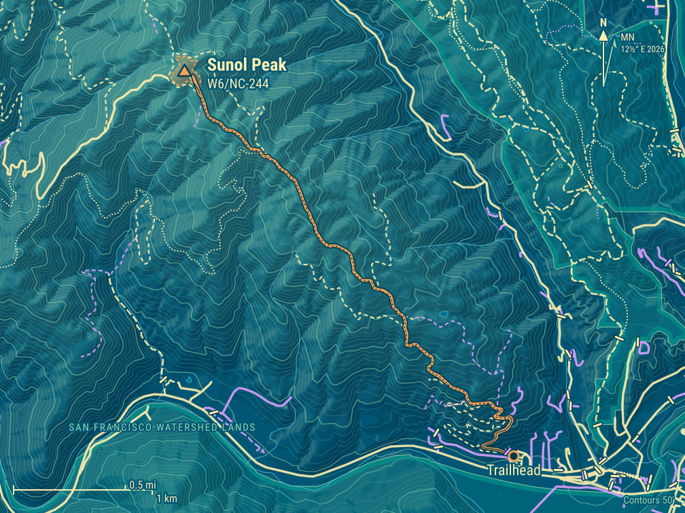
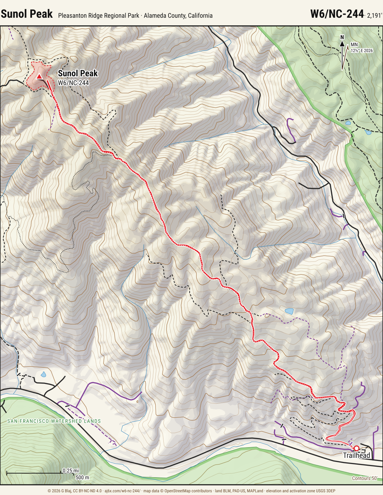
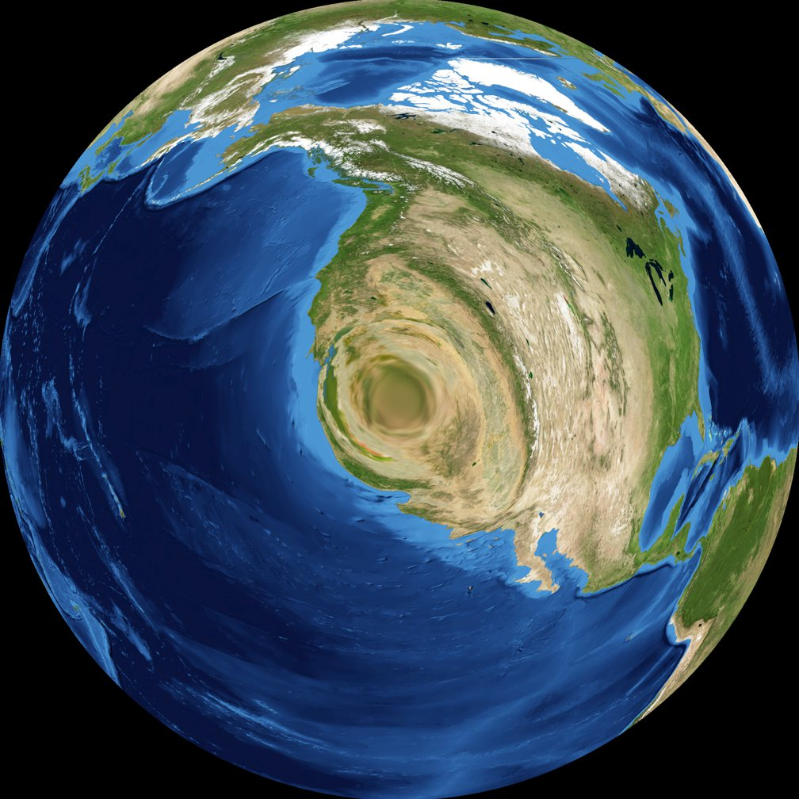
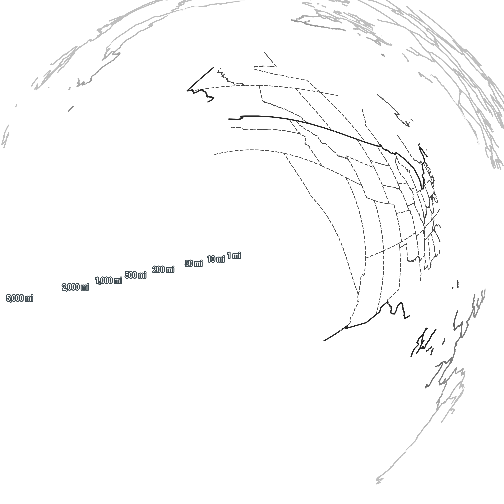
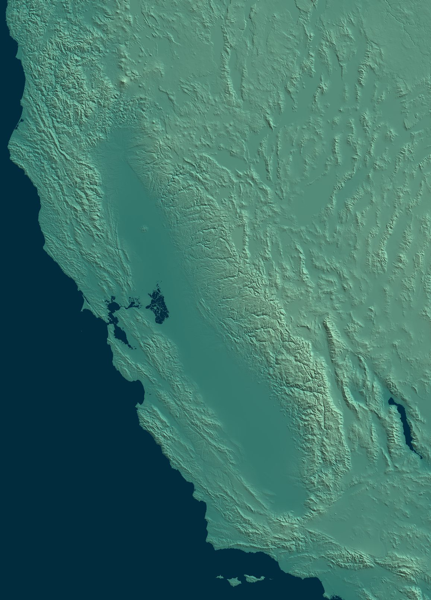
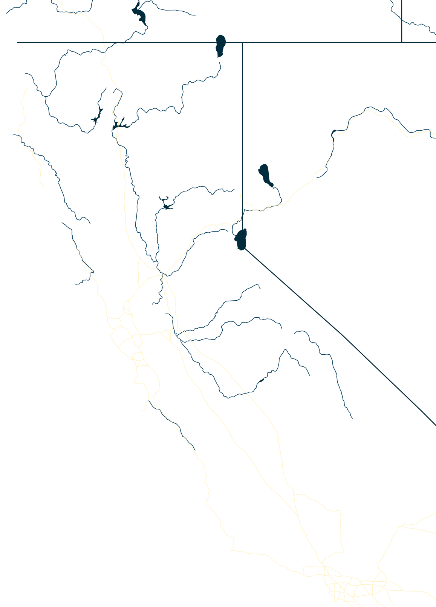
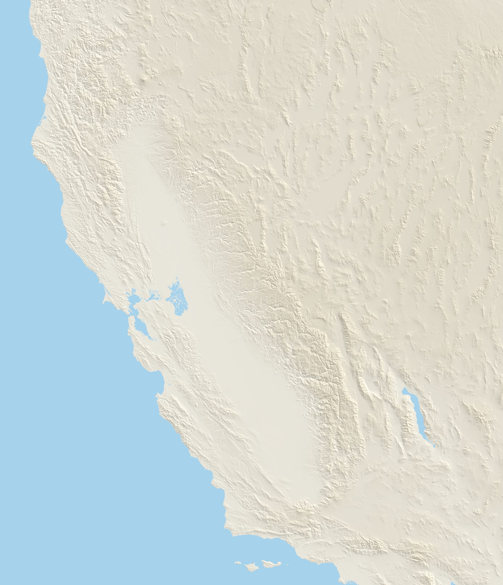
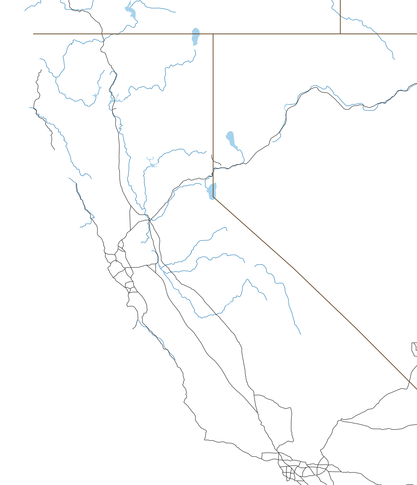

The top of Sunol Peak in July 2023: the communications site, lost in the clouds.
Summit
Points 1
First activation KJ6WEG, 16 February 2015
Elevation 2,191′ (668 m)
Prominence 1,721′ (525 m)
Isolation 7.5 mi (12.1 km)
Region Northern Coastal Ranges
County Alameda, California
Grid CM97ao
Land Pleasanton Ridge Regional Park (East Bay Regional Park District)
Wilderness None
POTA park None
Route and radio
Trailhead Tyler Ranch Staging Area, 260′ (79 m)
Access Paved road
Red tape None; the park closes in the evening (5 PM in winter)
Round trip 5.5 mi (8.9 km), 4.5 h
Elevation gain 1,970′ (600 m)
Transport Hiking, Class 1
Cell service Verizon all the way up
Towers, power lines tower 39 m NE
RF nearby: 2,213 licensed stations within 30 km
What to bring, the cheapest radio that still works here, on the AJ6X RF scale : HF: rung 2 of 4, KX2, about $1,100: only the best receiver copes (thanks to WPCZ972, public safety on 42.34 MHz, 10 m NE, 132 dBµV/m). Or on a budget: uSDX or QMX + K9DP, about $190. VHF: rung 4 of 4, go home: nothing works, enjoy the view (thanks to WNKY522, public safety on 151.205 MHz, 10 m NE, 134 dBµV/m). Pulsing: paging KMB305 on 931.062 MHz, 10 m NE: expect the receiver to blank every few seconds.
Field strength at the summit from each station's power and distance, less an estimate of the terrain in between. A rough guide, by a rung either way: antenna patterns aren't known, and the noise from a site's equipment is in no licence. Data: FCC licences (2026-10-31), NOAA Weather Radio, OpenStreetMap.
Further down: Map · Aerial photo · QSO map · Summit to summit · Log
0′
1,000′
2,000′
3,000′
0
1
2
3
4
5 mi
activation zone
Track: 5.5 mi, 1,969′ of climbing, 259′ to 2,171′ · GPX track Cell service, 4G, from the carriers' maps:
Sunol Peak is the high point at the south end of Sunol Ridge, right above the little town of Sunol, with Pleasanton and the Livermore Valley on one side and Fremont and the Bay on the other. Grassy hills, oak woods, lots of cows, and on top, a big communications site with antenna towers.
Reaching it used to be much harder. For years there was no public trail to the top. The early activators (the first was KJ6WEG, in 2015) went up the communications site’s paved service road from Palomares Road, in Niles Canyon: “an unrelenting steep uphill”, over 1,600′ in just over 2 miles (KJ6WEG , AA6XA ). Few people made it: one activation a year, from 2015 to 2022.
That changed at the end of 2022, with a new route from the south. The East Bay Regional Park District bought the old Tyler Ranch in 2009 and the Robertson Ranch in 2012, and added them to Pleasanton Ridge Regional Park. The two ranches opened to the public in late November 2022 (Bay Nature ), AA6XA found the new trails in May 2023, the Tyler Ranch Staging Area opened that June, and the official opening was on 3 December 2023: about 18 miles of new trails, and the Sunol Ridge Trail all the way up to Sunol Peak (EBRPD ). Sunol Peak went from one activation a year to 7 in 2023 and 13 a year since. We were one of the 7 in 2023, and came back twice.
Getting there
The trail starts at the Tyler Ranch Staging Area, at the end of Foothill Road in Sunol. It’s a public park: no permit, no fee. The park is open from 8 AM, and it closes early in winter: 5 PM from November to February, 6 PM in March and October, 7 PM in April and September, 8 PM in summer (EBRPD: Pleasanton Ridge ). Plan to be back at the car before the gate closes.
When: all year. Green after the winter rains, golden and dry in summer; fall is tarantula season.Water: none on the trail. Bring plenty.Time: about 2 hours up for us, 3 miles and 2,100′ of climbing.Sun: no shade at all, all the way up. Avoid the hot days.Fog and wind: the summit is often in the clouds, and it can turn cold and windy fast, even in July. Bring a layer.Cattle: lots of cows on these hills, every year, and sometimes on the trail.Cell: Verizon all the way up.Ticks: the trail is a wide, well-kept road, so there is less grass to brush against, and a lower risk of ticks.Toilets: pit toilets at the staging area.Radio: VHF is out of the question next to the towers. HF works, away from them (see below).
Trailhead
The Tyler Ranch Staging Area is a large gravel lot (about 70 cars) at the very end of Foothill Road, at about 260′, with pit toilets and a map at the gate. It’s only a few minutes from I-680. Parking is free and plentiful.
The way up
The Sunol Ridge Trail climbs from the staging area straight up the ridge, and stays on it all the way to the top. My GPS (2025) says 2.9 miles and 2,140′ of climbing to the summit.
It’s steep and relentless in the beginning, with grades of 15 to 18% in places. It gets easier after the first 1,300′ of climbing or so; one more steep pitch, then the last half mile along the ridge is almost flat, with the last bit on the paved road to the towers.
In 2023 the weather was beautiful at the trailhead and most of the way up: sunny and warm. At one point we broke into the clouds, it got windy, and it turned really cold.
Climbing out of Sunol, July 2023.
Halfway up, under the clouds.
Higher up: the clouds start to sit on the ridge.
Neighbors on the ridge, November 2025, after the first rains.
Summit
The summit itself is taken by the communications site: several lattice towers covered in dishes and antennas, and an equipment building, all fenced off. It’s mostly public safety radio (police and fire dispatch on VHF, UHF and 800 MHz), plus paging transmitters around 930 MHz, which pulse every few seconds. Right next to the fence, our estimate from the FCC licenses is over 130 dBµV/m: VHF and UHF are hopeless here, and even HF is noisy. The activation zone is large, though, so the trick is to get away from the towers, ideally with some of the hill between you and them.
The top: an antenna farm, lost in the fog.
The view, when there is one, is amazing: the whole Bay Area to the west, and the Livermore Valley to the east. Mount Diablo is 18 miles to the north, Brushy Peak 15 miles to the northeast, and Mission Peak just to the south. On a clear day, even Mount Tamalpais, 42 miles away.
Activations
20 September 2026
Radio Elecraft KX2
Antenna 40m EFHW
Activators AJ6X (13), KO6MFP (6), KO6MFO (5)
Bands 40m (15), 20m (5), 15m (4)
Modes CW (24)
On air 21:02–21:56 UTC
The kids came along again, and this time they got on the air too! I set up lower down the hill, at the southeast end of the activation zone, with the hillside between us and the towers, and the antenna pointed straight at them. Much better signal to noise here, and still good enough to reach the Pacific Northwest!
Lots of contacts between the three of us: 13 for me, 6 for KO6MFP and 5 for KO6MFO, all CW. Each of us worked WU7H and WW7D on W7W/RS-027 in Washington, summit to summit. And some decent DX on 15m at the end: two contacts with Japan.
A reminder: a few dozen meters, and a hill between you and the towers, make a big difference. Part of it was the radio, too: the KX2 copes with strong nearby transmitters much better than the IC-705 I had in 2023.
1 November 2025
Radio Elecraft KX2
Antenna 40m EFHW
Activator AJ6X
Bands 40m (7), 17m (3), 30m (1)
Modes CW (11)
On air 21:33–22:15 UTC
Much better this time. The kids came along for the hike, not the radio. I set up at the end of our track on the aerial photo, southeast of the towers by the road, with the Elecraft KX2 and the same 40m EFHW. 11 contacts on 40m, 30m and 17m CW, including a summit to summit with WY7N on W7N/ES-048 in Nevada, and some decent DX on 17m: Finland and Japan.
9 July 2023
Radio Icom IC-705
Antenna 40m EFHW
Activator AJ6X
Bands 20m (3), 40m (1)
Modes SSB (4)
On air 23:31–23:40 UTC
I set up on the east side of the peak, with the Icom IC-705 and a 40m EFHW. Cold, wet, and very noisy from the towers. 4 contacts on SSB, including WU7H and WW7D summit to summit on W7W/CW-069, and I left.
A reminder: next to an antenna farm, get as far from the towers as the activation zone allows.
And back again
The same way back down.
On the way back in September 2026, near the bottom, we came across this amazing tarantula, crossing the road right in front of us. Fall is when the males go wandering, looking for a mate.
Our tarantula, September 2026.
Map


Full map (in full colour, a letter page to print) · © OpenStreetMap contributors · land BLM, PAD-US, MAPLand · Pleasanton Ridge Regional Park open to the public since 2022 (East Bay Regional Park District); PAD-US and CPAD still list it as closed · elevation and activation zone USGS 3DEP · Zone GeoJSON (all )
0′
1,000′
2,000′
3,000′
0
1
2
3
4
5 mi
activation zone
Track: 5.5 mi, 1,969′ of climbing, 259′ to 2,171′ · GPX track Cell service, 4G, from the carriers' maps:
Aerial photo
The activation zone is on public land, except the fenced communications site at the top. RFI, estimated for a Kenwood TH-D75A on 2 m with its stock antenna: about 19 dB of desense at the top, 6 dB at the quietest spot, 70 m north-northeast (the white ring), and about as quiet 120 m southwest (6 dB). From FCC licences and the terrain, not measured. Photo: USDA National Agriculture Imagery Program (NAIP), from the USGS National Map · land: BLM Surface Management Agency, PAD-US, MAPLand easements · ways: OpenStreetMap, U.S. Forest Service, USGS · activation zone from USGS 3DEP · RFI: FCC licences over USGS 3DEP Note 1.
QSO map


W7W/CW-069
W7W/RS-027
W7N/ES-048
N6TV heard AJ6X · 40m CW · 13 dB · 12 wpm · 21:31Z N6TV heard AJ6X · 40m CW · 18 dB · 12 wpm · 21:41Z N6TV heard AJ6X · 40m CW · 16 dB · 12 wpm · 22:10Z W6YX heard AJ6X · 40m CW · 51 dB · 12 wpm · 21:31Z W6YX heard AJ6X · 40m CW · 51 dB · 12 wpm · 21:42Z W6YX heard AJ6X · 40m CW · 52 dB · 12 wpm · 22:10Z W6YX heard KO6MFP · 40m CW · 50 dB · 18 wpm · 21:12Z W6YX heard KO6MFP · 40m CW · 47 dB · 18 wpm · 21:24Z WA7LNW heard AJ6X · 40m CW · 16 dB · 12 wpm · 21:39Z WA7LNW heard AJ6X · 40m CW · 19 dB · 12 wpm · 21:42Z WA7LNW heard AJ6X · 40m CW · 16 dB · 12 wpm · 22:09Z W6YX heard AJ6X · 17m CW · 38 dB · 12 wpm · 21:46Z W6YX heard AJ6X · 17m CW · 37 dB · 12 wpm · 21:56Z N6TV heard AJ6X · 17m CW · 3 dB · 12 wpm · 21:47Z WZ7I heard AJ6X · 17m CW · 6 dB · 12 wpm · 21:47Z WZ7I heard AJ6X · 17m CW · 26 dB · 12 wpm · 22:00Z K9LC heard AJ6X · 17m CW · 18 dB · 11 wpm · 21:56Z VE3EID heard AJ6X · 17m CW · 21 dB · 12 wpm · 22:00Z K7CO heard AJ6X · 40m CW · 16 dB · 12 wpm · 22:13Z VE6WZ heard AJ6X · 20m CW · 7 dB · 17 wpm · 21:01Z VE6WZ heard AJ6X · 20m CW · 9 dB · 17 wpm · 21:01Z VE6WZ-3 heard AJ6X · 20m CW · 7 dB · 17 wpm · 21:01Z W6YX heard AJ6X · 20m CW · 49 dB · 17 wpm · 21:01Z AK6RI-1 heard AJ6X · 20m CW · 18 dB · 17 wpm · 21:02Z KW7MM heard AJ6X · 20m CW · 10 dB · 17 wpm · 21:03Z W5ZN heard AJ6X · 20m CW · 14 dB · 17 wpm · 21:03Z K9LC heard AJ6X · 20m CW · 6 dB · 17 wpm · 21:08Z KW7MM-4 heard AJ6X · 20m CW · 2 dB · 17 wpm · 21:08Z N9CO heard AJ6X · 15m CW · 8 dB · 17 wpm · 21:40Z N9CO heard AJ6X · 15m CW · 7 dB · 17 wpm · 21:57Z W6YX heard AJ6X · 15m CW · 44 dB · 17 wpm · 21:40Z W6YX heard AJ6X · 15m CW · 42 dB · 17 wpm · 21:54Z K9LC heard AJ6X · 15m CW · 11 dB · 17 wpm · 21:41Z K9LC heard AJ6X · 15m CW · 9 dB · 17 wpm · 21:54Z W5ZN heard AJ6X · 15m CW · 27 dB · 18 wpm · 21:41Z WT9U heard AJ6X · 15m CW · 3 dB · 18 wpm · 21:42Z WT9U heard AJ6X · 15m CW · 4 dB · 17 wpm · 21:54Z AK6RI-1 heard AJ6X · 15m CW · 14 dB · 17 wpm · 21:42Z AK6RI-1 heard AJ6X · 15m CW · 14 dB · 17 wpm · 21:55Z K9IMM heard AJ6X · 15m CW · 12 dB · 17 wpm · 21:43Z K9IMM heard AJ6X · 15m CW · 9 dB · 18 wpm · 21:54Z KF9D · 15m CW JA5QJX · 15m CW 7N1FRE · 15m CW W2DON · 15m CW W2DON · 40m CW OH1MM · 17m CW WN4AT · 17m CW JH1OCC · 17m CW N9FAL · 20m SSB KF6HI · 20m CW N9OHW · 20m CW K6ACN · 20m CW KF0RIG · 20m CW N6WAI · 20m CW K6YK · 40m SSB WB6POT · 40m CW WW7D · 40m CW KD7LX · 40m CW WU7H · 40m CW W7USA · 40m CW KE7F · 40m CW K8SAT · 40m CW NT6E · 40m CW W7DLZ · 40m CW KD7WPJ · 40m CW WU7H · W7W/CW-069 · 20m SSB WW7D · W7W/CW-069 · 20m SSB WY7N · W7N/ES-048 · 30m CW WU7H · W7W/RS-027 · 40m CW WW7D · W7W/RS-027 · 40m CW
Azimuthal equidistant, power 0.3 distance scale, out to 9,904 km, centred on the summit: every QSO is a straight line, true in direction. Chasers at their location on QRZ, to about 5 km; summit-to-summit contacts at the other summit. Rings: what the skimmers of the Reverse Beacon Network heard of our calls during the activations, each skimmer at the centre of its grid square (1 from skimmers without a listed square). Earth: NASA Blue Marble. Note 2.
Summit to summit on 2 m
1,482 activated summits in reach of Sunol Peak on 2 m at 5 W, most activated first.
Rubber duckies, FM: 271. Mount Davidson W6/NC-423 , Vollmer Peak W6/NC-298 , Mount Diablo W6/CC-045 , San Bruno Mountain W6/CC-072 Half-waves, FM: 142. Grouse Ridge W6/NS-195 , Lowell Hill Ridge W6/NS-306 , Tamarack Peak W7N/WC-003 , Slide Mountain W7N/WC-004 Yagis, CW: 640. Donner Ridge W6/NS-181 , Lookout Mountain W6/ND-037 , Leviathan Peak W6/SN-039 , Gold Star Peak W6/NS-189 Long shots, yagis, CW, half of the time: 242. Mount Pinos W6/CC-002 , Cerro Noroeste W6/SC-001 , Frazier Mountain W6/CC-003 , San Emigdio Mountain W6/SC-002 Very long shots, yagis, CW, a tenth of the time: 187. Vetter Mountain W6/CT-021 , Throop Peak W6/CT-005 , Mount Baden-Powell W6/CT-004 , Triunfo Lookout W6/SC-219




W6/CT-021 Vetter Mountain, 316 mi W6/CT-005 Throop Peak, 323 mi W6/CT-004 Mount Baden-Powell, 324 mi W6/SC-219 Triunfo Lookout, 295 mi W6/CT-247 Mount Williamson, 319 mi W6/CT-017 Mount Gleason, 307 mi W6/CT-246 Mount Lewis, 321 mi W6/CT-089 Mount Lawlor, 315 mi W7O/CS-019 Mount Ashland, 311 mi W6/CC-056 Sandstone Peak, 294 mi W6/CT-259 Bald Mountain, 267 mi W7O/CS-030 McDonald Peak, 311 mi W6/CT-255 Magic Mountain, 300 mi W6/CT-046 Telegraph Peak, 335 mi W7O/CS-075 Soda Mountain, 309 mi W6/ND-144 Dante Benchmark, 303 mi W6/CT-093 Burnt Peak, 276 mi W7O/CS-021 Dutchman Peak, 310 mi W7O/CS-034 Big Red Mountain, 310 mi W7O/CS-068 Chinquapin Mountain, 314 mi W6/ND-224 Government Peak, 283 mi W7N/TR-065 Wild Oat Mountain, 150 mi W6/CD-005 Mazourka Peak, 214 mi W6/SS-405 Wyleys Knob, 254 mi W7O/CS-027 Wagner Butte, 314 mi W6/SS-276 Reversed Peak, 155 mi W6/ND-232 El Paso Peaks, 277 mi W6/ND-281 Quarry Benchmark, 283 mi W6/SS-320 Williams Butte, 155 mi W6/ND-077 6965, 216 mi W6/SC-315 El Montaon, 281 mi W6/CD-003 Telescope Peak, 285 mi W6/CT-056 Iron Mountain, 329 mi W6/ND-169 Red Mountain, 288 mi W6/CT-027 Condor Peak, 308 mi W6/CC-030 Nordhoff Peak, 263 mi W6/NE-036 Ball Mountain, 289 mi W6/CT-058 Pallett Benchmark, 316 mi W6/SC-031 Chief Peak, 264 mi W6/CT-159 Warm Springs Mountain, 280 mi W6/ND-014 Wildrose Peak, 283 mi W6/SS-361 Mace Benchmark, 252 mi W6/CT-122 Lebec B-9 Benchmark, 259 mi W6/NE-030 Lyons Peak, 274 mi W6/NE-210 Timber Mountain, 279 mi W6/NE-059 Sugar Hill, 301 mi W6/NE-216 West Bass Hill, 202 mi W6/NW-222 Buckhorn Bally, 211 mi W6/ND-126 Darwin Benchmark, 255 mi W6/ND-114 6140, 277 mi W6/NW-073 Condrey Mountain, 304 mi W7N/EL-017 Lewis, Mount, 333 mi W6/CD-007 Malpais Mesa, 245 mi W6/SS-348 7895, 249 mi W6/NE-084 Black Mountain, 271 mi W6/SS-641 4264, 272 mi W6/NE-046 Payne Peak, 285 mi W6/ND-073 7055, 219 mi W6/SS-227 Muah Mountain, 226 mi W6/IN-054 Eureka Dunes, 236 mi W6/SS-423 Butterbredt Peak, 260 mi W6/ND-252 4290, 272 mi W6/ND-217 Garlock Benchmark, 272 mi W6/NW-129 McKinley Mountain, 289 mi W7O/SC-001 Grayback Mountain, 319 mi W7O/CE-001 Crane Mountain, 320 mi W6/SS-092 12837, 219 mi W6/SN-043 Cook Peak, 237 mi W6/CD-014 Ubehebe Peak, 247 mi W6/ND-122 Ophir Mountain, 256 mi W6/SS-630 6244, 256 mi W6/SS-425 5924, 256 mi W6/SC-376 San Miguel Island, 263 mi W6/NE-151 Happy Camp Mountain, 266 mi W6/SS-475 Sugarloaf, 267 mi W6/SS-454 Chuckwalla Mountain, 267 mi W6/SC-009 Cobblestone Mountain, 269 mi W6/NE-021 8122, 271 mi W6/ND-171 Black Mountain, 271 mi W6/ND-180 5121, 273 mi W6/SC-336 Santa Rosa Island, 273 mi W6/NW-145 6026, 289 mi W6/NW-089 Lake Mountain, 292 mi W6/IN-016 8060, 219 mi W6/ND-101 Brass Benchmark, 223 mi W6/ND-111 6173, 226 mi W6/ND-253 4285, 227 mi W6/ND-134 5862, 233 mi W6/NE-305 South Twin Buttes, 235 mi W6/ND-128 Haiwee Ridge, 244 mi W6/NC-215 Fickle Hill, 245 mi W6/SS-407 6352, 247 mi W6/SS-358 Lamont Benchmark, 250 mi W6/SS-362 7475, 250 mi W6/SS-342 Sawtooth Peak, 250 mi W6/SC-210 2740, 252 mi W6/NE-167 Bear Mountain, 255 mi W6/SC-032 Old Man Mountain, 255 mi W6/SS-410 Walbrecht Peak, 257 mi W6/NW-112 6520, 258 mi W6/SS-443 5352, 259 mi W6/SC-015 Snowy Peak, 266 mi W6/SC-018 Black Mountain, 267 mi W6/SC-017 White Mountain, 268 mi W6/NE-071 Red Cap Mountain, 271 mi W6/NE-297 Pumice Stone Mountain, 273 mi W6/NE-080 Deer Mountain, 276 mi W6/ND-137 Corkscrew Peak, 277 mi W6/ND-196 Dome Mountain, 288 mi W6/NW-128 Indian Creek Baldy, 289 mi W6/NW-179 Craggy Mountain, 293 mi W6/NE-258 Lakeview Benchmark, 300 mi W6/NC-447 Four Brothers No 4, 301 mi W7O/CS-014 Carmine, Mount, 326 mi W7O/CS-013 Mount Harriman, 329 mi W6/SC-451 1390, 99 mi W7N/EM-008 9820, 200 mi W7N/EM-015 Davis Mountain, 202 mi W6/ND-095 6482, 218 mi W6/SS-424 Capitol Rock, 219 mi W6/ND-090 6586, 223 mi W6/ND-100 6373, 227 mi W6/NW-302 Bowerman Peak, 230 mi W6/SS-467 Hooper Hill, 236 mi W6/IN-034 8492, 238 mi W6/ND-135 5846, 238 mi W6/ND-145 5694, 238 mi W6/SC-062 Little Pine Mountain, 242 mi W6/SC-240 Sage Hill, 243 mi W6/ND-118 Whitecap Mountain, 246 mi W6/SS-624 7125, 249 mi W6/NE-147 Mitchell Hill, 250 mi W6/ND-119 Lost Burro Benchmark, 250 mi W6/IN-038 6683, 251 mi W6/SS-435 5620, 252 mi W6/SS-433 5660, 254 mi W6/ND-053 White Top Mountain, 255 mi W6/ND-146 5660, 256 mi W6/SS-411 6273, 257 mi W6/SC-045 Santa Ynez Mountains (HP), 258 mi W6/SC-020 6084, 260 mi W6/NW-151 Blue Ridge, 261 mi W6/SC-011 San Rafael Peak, 263 mi W6/NW-041 7684, 265 mi W6/SS-448 Cross Mountain, 265 mi W6/NW-051 Etna Mountain, 266 mi W7N/WC-013 Fox Mountain, 267 mi W6/CT-110 Limestone Benchmark, 268 mi W6/NE-149 Doe Peak, 269 mi W6/CN-015 Stephens Butte, 269 mi W7N/WC-079 6253, 271 mi W6/ND-055 Pinto Peak, 273 mi W6/NE-049 Medicine Mountain, 273 mi W6/CT-139 Redrock Mountain, 274 mi W7N/WC-019 Hog Ranch Mountain, 275 mi W6/SC-234 Santa Cruz Island, 275 mi W6/NE-045 Glass Mountain, 276 mi W6/NE-029 Mount Hoffman, 276 mi W6/SC-343 Sierra Blanca, 278 mi W7N/WC-032 Boulder Mountain, 279 mi W7N/HU-148 4872, 280 mi W6/NE-113 6620, 281 mi W7N/NS-196 CA/NV Boundary Monument 93, 282 mi W6/ND-250 4403, 282 mi W7N/HU-139 Burnt Rock Peak, 282 mi W7N/WC-062 Pinto Peak, 282 mi W7N/WC-057 Hart Mountain, 282 mi W7N/NS-204 Springdale Mountain, 283 mi W6/NW-137 6108, 285 mi W6/ND-007 Sentinel Peak, 288 mi W6/NE-292 Cedar Mountain, 288 mi W6/ND-056 7500, 289 mi W7N/NN-067 9271, 289 mi W6/NE-017 Bald Mountain, 289 mi W6/ND-400 7380, 290 mi W7N/NN-071 Wilson, Mount, 290 mi W6/ND-013 Porter Peak, 290 mi W6/ND-064 7312, 290 mi W6/ND-069 Manly Peak, 291 mi W6/NW-077 Tom Martin Peak, 291 mi W7N/NN-032 10098, 292 mi W6/ND-235 4566, 293 mi W6/NE-026 Buck Mountain, 296 mi W6/NW-079 Scraggy Mountain, 305 mi W6/NW-116 White Mountain, 305 mi W6/ND-098 Funeral Peak, 311 mi W7O/CE-022 Rogger Peak, 326 mi W6/CC-002 Mount Pinos, 248 mi W6/SC-001 Cerro Noroeste, 245 mi W6/CC-003 Frazier Mountain, 256 mi W6/SC-002 San Emigdio Mountain, 244 mi W6/SC-004 Tecuya Mountain, 252 mi W6/SC-005 Escapula Peak, 248 mi W6/WH-009 10660, 206 mi W7N/WC-111 Rattlesnake Mountain, 173 mi W6/CC-005 Reyes Peak, 254 mi W6/SC-086 La Cumbre Peak, 249 mi W6/CT-095 Liebre Mountain, 271 mi W6/SC-378 Black Hill, 168 mi W6/ND-393 8185, 184 mi W6/SS-285 Bald Mountain, 231 mi W6/IN-015 Tollhouse Benchmark, 208 mi W6/CC-036 Santa Ynez Peak, 240 mi W6/SC-012 San Guillermo Mountain, 255 mi W6/SC-003 Haddock Mountain, 255 mi W6/ND-047 Casa Diablo Mountain, 185 mi W6/SC-124 3620, 246 mi W6/SS-194 Trail Peak, 222 mi W6/SC-008 Antimony Peak, 246 mi W6/IN-014 8500, 214 mi W6/ND-067 Blind Spring Hill, 188 mi W6/IN-018 7900, 211 mi W7N/WC-083 Steamboat Hills, 167 mi W6/SS-317 Piute Peak, 247 mi W6/IN-036 7900, 217 mi W6/SC-171 Brush Peak, 244 mi W6/CC-008 Alamo Mountain, 263 mi W6/IN-017 7900, 217 mi W6/NS-267 6669, 136 mi W6/NS-278 6420, 177 mi W6/NS-270 6621, 196 mi W6/NS-316 McElroy Hill, 166 mi W6/NS-297 6002, 196 mi W6/SC-081 Long Benchmark, 223 mi W7N/TR-053 6460, 153 mi W6/ND-050 Chocolate Mountain, 219 mi W6/IN-010 Cerro Gordo Peak, 240 mi W6/WH-010 Station Peak, 209 mi W6/SC-220 2649, 200 mi W6/SS-224 11100, 224 mi W6/SS-371 Morris Peak, 256 mi W6/CT-260 4501, 282 mi W6/NS-311 Big Hill, 166 mi W6/SC-425 Brown Mountain, 199 mi W6/IN-008 Andrews Mountain, 214 mi W6/IN-011 8980, 216 mi W6/SS-298 9060, 229 mi W6/NC-203 Bunker Hill, 236 mi W6/NE-056 Likely Mountain, 255 mi W6/NS-285 Mount Jura, 180 mi W6/IN-029 Hurd Peak, 187 mi W6/WH-014 Dan Benchmark, 202 mi W6/NE-090 Table Mountain, 204 mi W6/IN-012 Juniper Benchmark, 215 mi W6/CC-015 Hayfork Bally, 221 mi W6/SS-287 9348, 222 mi W6/NE-051 Shinn Mountain, 231 mi W6/NE-235 Haney Mountain, 235 mi W6/CC-018 Cuyama Peak, 240 mi W6/SS-318 Owens Peak, 253 mi W6/SS-434 5521, 259 mi W6/NE-076 Manzanita Mountain, 260 mi W6/SC-007 Thorn Point, 260 mi W6/SC-243 2403, 196 mi W6/NE-200 Bald Mountain, 204 mi W6/NE-197 5252, 213 mi W6/SS-272 Blackrock Mountain, 225 mi W6/SS-274 Smith Mountain, 229 mi W6/SC-054 Cachuma Mountain, 230 mi W6/NC-485 Bear River Ridge, 232 mi W6/SS-623 Kennedy Peak, 239 mi W6/CN-022 Soldier Mountain, 239 mi W6/SS-621 7540, 241 mi W6/SS-356 Sorrell Peak, 253 mi W6/SN-042 Skinner Peak, 254 mi W6/SS-207 Red Mountain, 175 mi W6/SS-226 Sugarloaf, 194 mi W6/CC-034 Plummer Peak, 210 mi W7N/EM-180 6090, 211 mi W6/SS-597 10755, 216 mi W6/IN-019 7848, 219 mi W6/ND-093 Sugarloaf Mountain, 221 mi W6/SS-283 Monache Mountain, 228 mi W6/SS-458 Brushy Hell Benchmark, 229 mi W6/SS-616 8443, 234 mi W6/IN-007 Pleasant Point, 238 mi W6/SS-336 8108, 238 mi W6/CT-101 Black Mountain, 254 mi W6/SC-027 Ortega Peak, 256 mi W6/NE-125 Black Fox Mountain, 257 mi W6/SS-393 Russell Peak, 258 mi W7N/NS-117 Booker Mountain, 260 mi W6/NE-290 Milk Peak, 278 mi W7N/PC-003 Star Peak, 284 mi W6/CV-014 La Cima, 152 mi W6/NS-332 4180, 172 mi W6/SS-126 Spire Peak, 174 mi W6/SN-025 Mount Tinemaha, 198 mi W6/NW-243 Knob Peak, 200 mi W6/WH-012 Black Mountain, 204 mi W6/IN-033 9207, 212 mi W6/SS-176 Mount Anna Mills, 212 mi W6/SC-118 Midway Peak, 213 mi W7N/PC-192 Wheat Peak, 213 mi W6/SS-200 11557, 215 mi W6/NW-264 North Hoadley Peaks, 217 mi W6/NE-126 Horse Lake Mountain, 217 mi W6/NW-226 Thompson Peak, 217 mi W7N/EM-013 Piper Peak, 220 mi W6/NW-234 Eastman Benchmark, 220 mi W6/SN-031 Kern Peak, 220 mi W7N/EM-114 Emigrant Peak, 221 mi W6/SS-249 10137, 221 mi W6/IN-002 Mount Inyo, 225 mi W6/IN-001 Keynot Peak, 227 mi W6/SS-619 8180, 227 mi W6/SS-254 Brown Mountain, 227 mi W6/SS-364 Black Mountain, 229 mi W6/IN-004 New York Butte, 230 mi W6/SS-608 9156, 231 mi W6/SS-294 9220, 232 mi W6/SS-305 Taylor Dome, 234 mi W6/SS-327 Cannel Benchmark, 235 mi W6/SS-400 Lightner Peak, 236 mi W6/SC-030 5687, 236 mi W6/SC-026 5860, 240 mi W6/SC-392 4580, 242 mi W6/NW-075 Bonanza King, 243 mi W6/SC-022 Eagle Rest Peak, 243 mi W6/NE-205 Girard Ridge, 244 mi W6/SC-053 Pleito Hills, 246 mi W6/SS-345 Chimney Peak, 247 mi W6/NE-133 Widow Mountain, 247 mi W6/SC-039 Hildreth Peak, 247 mi W6/SS-360 Bales Benchmark, 249 mi W6/CT-113 Flannagan Benchmark, 250 mi W6/SS-347 Mount Jenkins, 255 mi W6/SS-418 Mayan Peak, 255 mi W6/SS-414 Pinyon Mountain, 257 mi W6/CT-059 Tehachapi Mountain, 261 mi W6/NE-088 Grouse Mountain, 262 mi W6/SC-010 Hines Peak, 267 mi W6/NE-010 The Whaleback, 270 mi W6/NE-002 Warren Peak, 275 mi W6/NS-337 3793, 148 mi W7N/TR-023 7900, 158 mi W7N/TR-040 Artesia Benchmark, 169 mi W6/NS-242 7062, 172 mi W7N/EM-170 White Mountain, 190 mi W6/NS-256 6860, 190 mi W6/NS-303 5860, 201 mi W6/SC-070 McKittrick Summit, 201 mi W6/WH-013 8860, 203 mi W7N/EM-136 6500, 204 mi W7N/PC-190 White Throne Mountains HP, 206 mi W6/SS-581 Polychrome Peak, 208 mi W7N/WC-106 5346, 211 mi W6/IN-013 8940, 211 mi W6/NE-168 5820, 213 mi W6/SS-311 Fish Benchmark, 213 mi W6/CN-018 Wilcox Peak, 214 mi W6/NE-146 6174, 214 mi W6/IN-009 9380, 215 mi W6/IN-020 Mount Nunn, 217 mi W6/IN-021 7045, 217 mi W6/SC-394 4175, 217 mi W6/NW-258 4635, 218 mi W6/SS-312 Hockett Peak, 218 mi W6/CD-004 Wünüpü Peak, 218 mi W6/SC-127 3575, 218 mi W6/IN-003 10961, 218 mi W6/CD-002 Waucoba Mountain, 219 mi W6/NE-198 Red Rock Hill, 219 mi W6/NE-154 Black Mountain, 221 mi W6/NW-265 4563, 221 mi W6/NW-299 4232, 222 mi W6/NW-233 Lookout Ridge, 222 mi W6/IN-006 10088, 223 mi W6/SS-599 Sharknose Ridge, 223 mi W6/SS-256 Templeton Mountain, 224 mi W6/SC-072 Hurricane Deck, 225 mi W6/NE-117 Snowstorm Mountain, 225 mi W6/SC-355 Santa Rita Hills, 225 mi W7N/EM-023 9149, 225 mi W6/SS-232 10860, 226 mi W7N/EM-017 Silver Peak, 226 mi W6/ND-084 Zinc Benchmark, 227 mi W6/CN-028 Hatchet Mountain, 227 mi W6/IN-032 10460, 227 mi W7N/EM-030 Red Mountain, 228 mi W6/NE-112 6651, 228 mi W6/SS-436 5620, 230 mi W6/ND-089 Eureka Peak, 231 mi W6/NE-230 Long Valley Mountain, 233 mi W6/SS-340 8060, 236 mi W6/NE-025 Observation Peak, 237 mi W7N/EM-019 Harvey Peak, 237 mi W6/ND-072 Sandy Benchmark, 238 mi W7N/EM-031 Palmetto Mountain, 238 mi W6/SC-138 3460, 240 mi W6/NE-317 Yellowjacket Mountain, 240 mi W6/NE-134 Hayden Hill, 240 mi W6/SC-014 Madulce Peak, 241 mi W6/SS-620 8137, 243 mi W6/ND-024 Dry Mountain, 243 mi W6/NE-140 Grizzly Peak, 244 mi W6/ND-051 Galena Benchmark, 246 mi W7N/EM-122 General Thomas Hills, 247 mi W6/NE-057 Dodge Benchmark, 252 mi W6/SC-382 Matilija Wilderness HP, 252 mi W6/ND-038 8261, 253 mi W6/ND-059 Hunter Mountain, 253 mi W6/SC-021 Monte Arido, 253 mi W6/SC-384 5780, 254 mi W6/NW-124 North Trinity Mountain, 255 mi W6/SC-006 6955, 256 mi W6/SS-401 6406, 256 mi W6/NW-023 8001, 256 mi W6/SS-368 Scodie Mountains (HP), 256 mi W7N/EM-123 Gold Mountain, 257 mi W6/NE-295 7220, 257 mi W6/NE-145 Little Black Fox Mountain, 258 mi W7N/NS-091 Butler, Mount, 258 mi W7N/EM-112 Douglas Benchmark, 259 mi W6/NE-006 Hat Mountain, 262 mi W7N/PC-165 Old Razorback Mountain, 262 mi W6/NE-123 Hermit Butte, 264 mi W6/NE-012 Ash Creek Butte, 265 mi W6/SS-408 6345, 266 mi W6/NE-298 Hemlock Ridge, 266 mi W6/NE-004 Emerson Peak, 267 mi W6/NE-001 Eagle Peak, 269 mi W6/NE-005 Cole Peak, 269 mi W6/NE-022 Haight Mountain, 270 mi W7N/NN-149 Salisbury Peak, 273 mi W7N/PC-091 Lone Mountain, 274 mi W7N/EL-003 Edith Hill, 285 mi W7N/EL-022 9417, 287 mi W7N/PC-052 Eugene Mountains HP, 299 mi W6/NS-181 Donner Ridge, 149 mi W6/ND-037 Lookout Mountain, 163 mi W6/SN-039 Leviathan Peak, 145 mi W6/NS-189 Gold Star Peak, 150 mi W6/ND-392 Dry Creek Knoll, 161 mi W6/NS-147 Mount Watson, 146 mi W6/NS-397 Tahoe Mountain, 136 mi W6/ND-012 Bald Mountain, 166 mi W6/NS-248 7008, 136 mi W6/NS-138 Mount Pluto, 148 mi W7N/TR-027 Captain Pomin Rock, 149 mi W7N/WC-011 Peavine Peak, 173 mi W6/SN-033 Mammoth Mountain, 158 mi W6/NS-204 KU6J Memorial Peak - 7559, 142 mi W6/WH-008 10940, 205 mi W6/ND-041 8126, 167 mi W6/NS-177 7860, 154 mi W6/NS-236 Prosser Hill, 152 mi W6/NS-264 Boca Hill, 156 mi W6/NS-269 6622, 139 mi W6/ND-026 Gilbert Peak, 165 mi W6/NS-160 Sardine Peak, 162 mi W6/WH-007 Clem Nelson Peak, 206 mi W6/NS-135 South Maggies Peaks, 134 mi W6/NS-210 Colorado Hill, 140 mi W6/NS-156 Lacey Benchmark, 148 mi W6/ND-029 Banner Ridge, 183 mi W6/NS-132 Babbitt Peak, 168 mi W6/NS-392 7779, 142 mi W6/SN-001 Mount Whitney, 213 mi W6/NS-017 Tioga Peak, 148 mi W7N/TR-007 Genoa Peak, 148 mi W6/SC-377 Valley View Benchmark, 182 mi W6/NS-193 Sagehen Hills, 153 mi W7N/WC-028 Scott, Mount, 165 mi W6/WH-004 Campito Mountain, 204 mi W6/WH-006 County Line Hill, 205 mi W6/NS-228 Beckwourth Peak, 169 mi W7N/WC-010 Virginia Peak, 198 mi W6/NS-159 8166, 149 mi W6/SS-306 Deer Mountain, 159 mi W6/ND-009 Masonic Mountain, 160 mi W7N/TR-025 Davidson, Mount, 169 mi W6/SC-353 Valencia Peak, 173 mi W6/SS-334 Big Baldy, 180 mi W7N/WC-064 6607, 184 mi W6/NS-065 Hawkins Peak, 136 mi W6/NS-153 Scott Peak, 141 mi W6/NS-203 7605, 160 mi W6/SS-284 Earthquake Dome, 160 mi W6/NS-146 Verdi Peak, 163 mi W6/NS-213 Schallenberger Ridge, 147 mi W6/NS-169 Land Peak, 163 mi W6/CN-006 Dixie Mountain, 183 mi W6/ND-378 Sheep Mountain, 203 mi W6/CC-028 Figueroa Mountain, 226 mi W6/NS-420 Colfax Hill, 116 mi W6/SS-313 Indian Rock, 130 mi W6/SN-036 Mount Tallac, 133 mi W6/NS-198 Smith Peak, 172 mi W6/CN-005 Mount Ingalls, 178 mi W6/NS-163 Webber Peak, 151 mi W7N/TR-005 Bald Mountain, 154 mi W6/CC-010 Anthony Peak, 164 mi W6/NS-207 Crocker Mountain, 176 mi W6/NS-233 Black Mountain, 193 mi W7N/TR-014 Duane Bliss Peak, 150 mi W7N/WC-014 Pond Peak, 193 mi W6/SC-056 Ranger Peak, 228 mi W6/NS-382 Pickett Peak, 135 mi W7N/TR-042 McTarnahan Hill, 160 mi W6/SC-159 Hi Mountain, 183 mi W6/CD-001 White Mountain Peak, 201 mi W6/NS-122 8930, 143 mi W7N/TR-006 Snow Valley Peak, 153 mi W6/SS-354 Park Ridge, 175 mi W6/SC-357 Cerro San Luis Obispo, 176 mi W7N/WC-039 Freds Mountain, 186 mi W6/WH-003 Piute Mountain, 202 mi W6/NS-164 8090, 141 mi W6/NS-244 7052, 148 mi W7N/TR-075 Prison Hill, 158 mi W6/NC-187 Chamisal Mountain, 200 mi W7N/PC-032 Fairview Peak, 232 mi W6/NC-025 French Ridge, 123 mi W6/NS-125 8910, 133 mi W6/NC-042 Pine Mountain, 133 mi W7N/TR-026 7764, 153 mi W6/NS-166 8060, 155 mi W6/SC-207 Tessajera Benchmark, 169 mi W6/SS-314 Buck Rock, 179 mi W6/NS-413 Scott Hill, 132 mi W6/NS-211 7481, 156 mi W6/NC-446 West Log Spring Ridge, 161 mi W6/NE-020 West Prospect Peak, 208 mi W6/NS-216 Findley Peak, 148 mi W7N/TR-013 8738, 152 mi W6/NS-220 7348, 161 mi W6/ND-048 Trafton Mountain, 184 mi W7N/WC-026 Dogskin Mountain, 195 mi W7N/TR-003 Siegel, Mount, 158 mi W7N/TR-004 Oreana Peak, 158 mi W6/NS-262 6815, 166 mi W6/SC-339 Bishop Peak, 174 mi W6/CN-011 Mount Hough, 177 mi W6/SC-327 1715, 177 mi W6/ND-052 Antelope Mountain, 185 mi W6/CN-001 Mount Shasta, 262 mi W6/NC-228 2305, 127 mi W6/NC-487 2580, 134 mi W6/SS-388 Musick Mountain, 147 mi W7N/TR-028 Bismark Peak, 163 mi W6/SC-373 Cerro Cabrillo, 168 mi W6/ND-003 Glass Mountain (HP), 176 mi W6/NE-302 Beckwourth Pass Benchmark, 178 mi W7N/WC-030 Spanish Springs Peak, 189 mi W6/NS-183 Thompson Peak, 197 mi W6/SN-003 Mount Langley, 217 mi W6/SC-028 Peak Mountain, 220 mi W6/SS-618 Piute Lookout, 247 mi W6/NS-127 Echo Peak, 132 mi W6/ND-391 9060, 144 mi W6/CC-006 Black Butte, 154 mi W6/NW-100 Buck Rock, 167 mi W7N/WC-093 Granite Hills, 176 mi W7N/WC-084 Spanish Benchmark, 182 mi W7N/WC-092 Coyote Ridge, 184 mi W6/NS-271 Johnson Hill, 191 mi W6/NS-249 6998, 195 mi W6/SS-066 Mount Gould, 204 mi W6/WH-005 Blanco Mountain, 206 mi W6/NS-107 9269, 135 mi W6/ND-388 Mean Benchmark, 141 mi W6/NC-003 Brushy Mountain, 150 mi W6/ND-005 Potato Peak, 160 mi W6/SS-093 Mount Starr, 173 mi W6/NE-111 Late Benchmark, 181 mi W7N/EM-021 Bald Mountain, 186 mi W6/NS-235 Clarks Peak, 194 mi W6/SS-085 Cirque Peak, 218 mi W6/NS-276 6460, 171 mi W6/NS-185 Grizzly Mountain, 175 mi W6/NS-196 Grizzly Peak, 176 mi W6/NS-257 Delunga Peak, 185 mi W7N/EM-002 Trail Canyon Peak, 196 mi W6/NW-388 2197, 208 mi W6/NE-040 Antelope Mountain, 212 mi W6/CN-016 Shaffer Mountain, 213 mi W6/CC-001 Mount Eddy, 257 mi W6/SC-108 Black Mountain, 104 mi W6/NS-380 9374, 129 mi W6/NS-312 Sugarloaf, 147 mi W7N/TR-051 6530, 149 mi W6/NS-239 7100, 150 mi W7N/TR-036 7074, 153 mi W7N/TR-070 Hot Springs Mountain, 156 mi W6/SS-252 White Wing Mountain, 157 mi W6/ND-016 Mount Biedeman - West, 159 mi W6/ND-015 9060, 164 mi W6/ND-028 8580, 170 mi W6/ND-019 Cowtrack Mountain, 172 mi W7N/EM-037 Aurora Peak, 173 mi W6/NS-275 Sally Benchmark, 175 mi W7N/TR-068 5990, 177 mi W6/NS-258 6831, 177 mi W6/NS-403 6540, 177 mi W7N/WC-090 Juniper Ridge, 183 mi W7N/WC-018 Petersen Mountain, 183 mi W6/SC-272 Bald Mountain, 193 mi W6/NC-078 North Slide Peak, 215 mi W6/NE-131 Black Butte, 260 mi W6/SC-224 2577, 120 mi W6/NC-381 1380, 123 mi W6/SS-457 Goat Mountain, 131 mi W6/NS-273 6522, 144 mi W7N/WC-008 Herlan Peak, 154 mi W7N/TR-019 Mineral Peak, 163 mi W6/CC-038 Cahto Peak, 168 mi W7N/WC-087 6075, 175 mi W6/NS-288 North Coyote Hills, 182 mi W6/NS-229 Wildcat Ridge, 195 mi W6/SC-069 Zaca Peak, 224 mi W6/SS-258 Sherman Peak, 225 mi W6/SS-277 9470, 226 mi W6/NS-390 7860, 136 mi W6/NS-075 Polly Dome, 136 mi W6/SS-399 Mount Stevenson, 147 mi W6/NS-008 Tioga Crest, 147 mi W6/ND-394 Hunewill Hills, 149 mi W6/SS-198 San Joaquin Mountain, 154 mi W6/NC-401 1140, 154 mi W6/ND-025 8662, 156 mi W6/SS-601 9717, 157 mi W7N/TR-033 7242, 158 mi W6/ND-389 Crater Mountain, 160 mi W6/NS-401 6847, 164 mi W6/NS-259 6826, 171 mi W6/SS-156 Pilot Knob, 175 mi W6/SC-123 Black Mountain, 177 mi W6/NS-202 Reconnaissance Peak, 178 mi W6/NS-405 Kessler Peak, 183 mi W7N/WC-095 Hungry Mountain, 187 mi W6/NE-153 Stover Mountain, 187 mi W6/CC-041 King Peak, 212 mi W6/NE-135 6300, 217 mi W6/CN-009 Burney Mountain, 221 mi W6/NS-317 South Kibbie Ridge, 114 mi W6/SC-205 Williams Hill, 126 mi W6/NS-154 Lost Corner Mountain, 134 mi W6/NS-192 7730, 138 mi W6/NC-012 Summit Springs Hill, 145 mi W6/SS-090 Parker Peak, 150 mi W6/NS-328 5180, 167 mi W6/ND-381 Patricia Peak, 174 mi W6/NS-222 Taylor Rock, 175 mi W6/NS-238 Haskell Peak, 175 mi W7N/WC-096 5950, 180 mi W7N/EM-004 Cory Peak, 180 mi W6/NS-284 6332, 181 mi W6/NS-180 Kettle Benchmark, 186 mi W6/SS-032 Cloudripper, 189 mi W7N/WC-089 Warm Springs Mountain, 190 mi W6/CN-007 Mount Harkness, 197 mi W7N/EM-005 Mustang Mountain, 198 mi W6/SC-144 Porter Peak, 204 mi W6/NE-047 Roop Mountain, 205 mi W7N/EM-124 Candelaria Mountain, 211 mi W6/NE-303 6371, 213 mi W6/NE-119 Cal Mountain, 215 mi W6/CC-033 Bohemotash Mountain, 221 mi W6/CN-008 Fredonyer Peak, 223 mi W6/NE-156 Snag Hill, 237 mi W6/SC-215 Panoche Hills, 91 mi W6/NS-412 5380, 115 mi W6/NC-456 Cow Mountain, 123 mi W6/ND-382 Black Mountain, 147 mi W6/ND-383 Lee Vining Peak, 151 mi W6/CV-016 Smith Mountain, 159 mi W6/NS-394 7580, 172 mi W6/NS-200 7654, 173 mi W6/SS-120 Treasure Benchmark, 175 mi W6/NS-279 Sugar Loaf, 176 mi W6/NS-398 Bald Rock, 179 mi W6/NS-230 Horton Ridge, 180 mi W6/NE-092 Turner Mountain, 186 mi W6/SS-243 Mitchell Peak, 187 mi W7N/WC-091 Hungry Ridge North, 189 mi W6/NS-252 Meadow View Peak, 191 mi W6/NS-241 McKesick Peak, 193 mi W6/CN-013 Pegleg Mountain, 199 mi W6/SN-023 Kearsarge Peak, 205 mi W6/CC-017 Black Lassic, 207 mi W6/SC-100 Treplett Mountain, 207 mi W6/NW-132 Shasta Bally, 210 mi W6/SN-002 Mount Williamson, 210 mi W6/SS-290 Jackass Peak, 229 mi W6/NE-044 Spanish Springs Peak, 234 mi W6/SN-052 Breckenridge Mountain, 238 mi W6/SC-246 2389, 94 mi W6/CC-029 Laguna Mountain, 108 mi W6/NC-164 Cold Spring Mountain, 130 mi W6/SS-377 Liberty Cap, 131 mi W6/NS-300 Brady Mountain, 139 mi W6/NS-086 9614, 142 mi W6/CC-016 Kneecap, 143 mi W6/ND-390 9060, 143 mi W6/NS-039 10827, 144 mi W6/SS-472 Burrough Mountain, 146 mi W6/NC-414 Mathison Peak, 149 mi W6/NS-251 Bunker Hill, 153 mi W6/ND-002 South Sister, 155 mi W6/SS-269 9691, 155 mi W6/SS-244 Eagle Peak, 164 mi W6/SS-186 Laurel Mountain, 166 mi W7N/TR-016 8550, 167 mi W7N/TR-041 Chet Benchmark, 171 mi W6/ND-018 Granite Mountain, 173 mi W6/SS-188 Wheeler Crest, 178 mi W6/SS-019 Mount Tom, 180 mi W6/NS-293 6112, 181 mi W6/NS-158 Adams Peak, 186 mi W6/NS-212 Dyer Mountain, 187 mi W6/NE-276 Inskip Hill, 188 mi W6/IN-026 12362, 190 mi W7N/WC-088 Seven Lakes Mountain, 191 mi W6/SS-218 Round Mountain, 194 mi W6/NE-007 Reading Peak, 198 mi W6/NE-124 Chaparral Hill, 199 mi W6/NE-127 Fredonyer Butte, 199 mi W6/SS-185 Mount Bago, 201 mi W6/SN-004 Mount Tyndall, 208 mi W6/NW-391 1913, 214 mi W6/SC-037 Caliente Mountain, 215 mi W6/NE-087 Whaleback Mountain, 216 mi W7N/PC-193 Rainbow Mountain, 221 mi W6/CN-010 Harvey Mountain, 221 mi W6/SS-329 Sunday Peak, 224 mi W6/CN-027 Haycock Peak, 226 mi W6/SN-037 Cannell Peak, 231 mi W6/NE-207 5145, 242 mi W6/NW-107 6617, 250 mi W6/SC-423 2540, 85 mi W6/SC-079 4092, 104 mi W6/SC-063 Hepsedam Peak, 109 mi W6/SC-055 The Picachos, 111 mi W6/SC-047 4850, 113 mi W6/SC-077 Joaquin Ridge, 121 mi W6/SS-428 Mount Savage, 125 mi W6/NS-414 4210, 127 mi W6/NC-099 Black Diamond Ridge, 129 mi W6/NS-136 Thornburg Peak, 133 mi W6/NC-009 Crockett Peak, 133 mi W6/NC-377 1420, 136 mi W6/NC-345 1634, 137 mi W6/NS-100 9390, 139 mi W6/ND-395 Mount Emma, 141 mi W6/NS-165 Pickle Benchmark, 142 mi W6/NS-098 9401, 142 mi W6/NS-381 9361, 142 mi W6/NS-168 8041, 145 mi W6/NS-408 5850, 146 mi W6/SS-422 Flume Peak, 146 mi W6/NC-441 Bear Wallow Ridge, 146 mi W7N/TR-021 Nevada Hill, 147 mi W6/NC-005 Bald Mountain, 149 mi W6/NC-069 Red Mountain, 151 mi W6/NC-013 Etsel Ridge, 154 mi W6/NC-327 Ramsey Ridge, 156 mi W7N/TR-010 Eagle Mountain, 156 mi W6/NS-298 5978, 161 mi W6/NS-226 7282, 163 mi W6/SS-175 12076, 163 mi W6/SS-335 Patterson Mountain, 164 mi W7N/TR-008 Como, Mount, 164 mi W6/SS-444 Pine Ridge, 165 mi W6/NS-250 Claremont, 165 mi W7N/TR-002 Bald Mountain, 165 mi W6/NS-307 5780, 168 mi W7N/TR-012 Lyon Peak, 169 mi W6/NC-006 Snake Ridge, 170 mi W7N/TR-054 Emma Peak, 171 mi W6/ND-022 8740, 171 mi W6/NS-282 Red Hill, 172 mi W6/SS-068 Mount Morgan, 172 mi W6/NS-167 Mount Ina Coolbrith, 173 mi W7N/TR-037 7066, 173 mi W6/SS-047 Royce Peak, 174 mi W6/NW-018 South Yolla Bolly, 174 mi W7N/EM-016 Hicks, Mount, 175 mi W7N/TR-081 5088, 176 mi W7N/TR-078 5295, 178 mi W6/IN-027 12260, 179 mi W6/NS-280 6374, 180 mi W6/SS-108 Mount George Davis, 181 mi W6/SN-014 Mount Emerson, 181 mi W6/NS-176 Butt Mountain, 182 mi W7N/TR-064 Churchill Butte, 185 mi W6/SC-165 West Garcia Mountain, 186 mi W6/NS-190 7740, 186 mi W6/CC-004 North Yolla Bolly, 187 mi W6/NS-402 6618, 187 mi W6/SN-018 Mount Goode, 187 mi W6/SS-253 Kettle Peak, 187 mi W6/NW-034 Black Rock Mountain, 188 mi W6/SS-217 Mount Silliman, 190 mi W7N/EM-042 8552, 190 mi W6/SS-299 Panther Peak, 191 mi W6/SC-320 Loma Pelona, 193 mi W6/SS-429 Blue Ridge, 194 mi W6/NS-201 Coyote Peak, 194 mi W6/NE-152 Goodrich Mountain, 194 mi W6/NE-069 7121, 195 mi W7N/TR-084 Arm Benchmark, 196 mi W7N/WC-015 State Line Peak, 197 mi W6/NE-061 Crater Butte, 201 mi W7N/WC-009 Tule Peak, 201 mi W6/NE-034 North Caribou, 201 mi W6/NE-013 Red Cinder, 202 mi W6/NW-178 Coffee Pot, 203 mi W6/WH-011 10140, 203 mi W6/SS-132 Snow Crown, 204 mi W7N/EM-035 Moho Mountain, 205 mi W6/SS-024 University Peak, 205 mi W6/NW-386 Mule Mountain, 205 mi W6/NE-024 Black Butte, 205 mi W6/NE-068 Badger Mountain, 206 mi W7N/EM-041 8562, 206 mi W6/CC-009 Bully Choop Mountain, 208 mi W6/SC-197 Buckhorn Ridge, 208 mi W6/SS-292 9236, 209 mi W6/CN-004 Crater Peak, 213 mi W6/NE-054 Crater Mountain, 214 mi W6/SS-210 Johnson Peak, 215 mi W6/NC-086 Grasshopper Mountain, 216 mi W7N/EM-167 Candelaria Hills, 218 mi W6/SS-375 7140, 228 mi W6/SC-035 5147, 228 mi W6/NW-054 Weaver Bally, 228 mi W6/NW-288 4308, 228 mi W7N/PC-187 5226, 230 mi W6/SN-029 Olancha Peak, 230 mi W6/SS-255 9980, 230 mi W6/SS-324 Corral Benchmark, 231 mi W6/SS-328 Pine Mountain, 234 mi W6/SC-191 2856, 236 mi W6/CT-070 Bear Mountain, 247 mi W6/CT-114 Black Spring Benchmark, 249 mi W6/SC-363 Sharp Benchmark, 69 mi W6/SC-209 Buckeye Ridge, 82 mi W6/NC-464 3431, 83 mi W6/SC-130 Cabezo Prieto, 93 mi W6/SC-157 Griswold Hills, 96 mi W6/SC-078 Anderson Peak, 101 mi W6/NC-489 Gibson Hill, 101 mi W6/CV-004 North Butte, 112 mi W6/SC-387 Condon Peak, 115 mi W6/SC-121 Chalk Peak, 116 mi W6/SS-556 Lilley Mountain, 121 mi W6/SC-109 Alder Peak, 124 mi W6/CC-042 Flag Peak, 126 mi W6/CC-061 Mount Mars, 129 mi W6/NS-083 Chittenden Peak, 130 mi W6/NS-114 Da-ek Dow Go-et Mountain, 131 mi W6/NS-105 9310, 134 mi W6/SC-226 Curry Mountain, 134 mi W6/NS-145 IXL Benchmark, 135 mi W6/NC-306 Gravelly Ridge, 135 mi W6/SS-300 Quartz Mountain, 136 mi W6/NS-419 Sunset Hill, 136 mi W6/NS-026 Hawksbeak Peak, 137 mi W6/NS-037 Wells Peak, 138 mi W6/NS-110 Daff Dome, 138 mi W6/SS-267 Fairview Dome, 139 mi W6/NS-120 Mineral Mountain, 140 mi W6/NS-027 Lost Cannon Peak, 140 mi W6/NS-059 Antelope Peak, 142 mi W6/NC-014 Pine Kop, 142 mi W6/NS-131 8802, 143 mi W6/NS-080 9711, 143 mi W6/NS-150 8376, 145 mi W6/NS-205 7540, 146 mi W6/NS-172 7973, 146 mi W6/NS-012 Monument Ridge, 146 mi W6/SC-269 2178, 146 mi W6/NS-116 9002, 148 mi W6/SC-255 2323, 150 mi W6/CV-006 Campbell Mountain, 152 mi W6/ND-004 Middle Sister, 156 mi W7N/TR-001 East Sister, 156 mi W7N/TR-085 Wellington Hills, 156 mi W7N/TR-009 Desert Creek Peak, 157 mi W6/SS-237 Mount Givens, 159 mi W6/SS-265 Black Peak, 160 mi W7N/TR-035 7134, 161 mi W6/SC-312 Rusty Peak, 161 mi W6/SS-191 11712, 161 mi W6/NS-299 5969, 161 mi W6/NS-416 3700, 163 mi W7N/TR-011 Rice Peak, 163 mi W6/SS-220 Virginia Pass Crag, 163 mi W7N/TR-022 Wiley Benchmark, 164 mi W6/SS-208 11446, 164 mi W6/SC-238 Frog Pond Mountain, 165 mi W6/SS-122 Bloody Mountain, 165 mi W7N/TR-029 7380, 166 mi W7N/EM-028 Beauty Peak, 167 mi W6/NS-336 Cohasset Ridge, 167 mi W6/SS-059 Red Slate Mountain, 167 mi W6/SN-026 12352, 168 mi W6/SS-113 Mount Baldwin, 168 mi W7N/EM-038 8740, 169 mi W7N/TR-015 Pine Grove Hills, 169 mi W6/NS-334 Cold Spring Hill, 169 mi W7N/EM-011 West Braly Peak, 169 mi W7N/TR-044 Wilson, Mount, 170 mi W7N/TR-049 Shamrock Hill, 170 mi W7N/TR-052 Black Mountain, 171 mi W7N/TR-018 Rawe Peak, 171 mi W6/ND-034 Cedar Hill, 172 mi W6/SS-125 Hilton Peak, 172 mi W6/ND-006 10220, 172 mi W7N/EM-075 Aurora Crater, 172 mi W6/SS-134 Mount Huntington, 173 mi W6/SC-356 Cerro Romualdo, 173 mi W6/SS-370 Converse Mountain, 173 mi W6/ND-043 8056, 173 mi W7N/TR-056 Singatse Peak, 173 mi W7N/TR-032 Rusty Benchmark, 174 mi W7N/WC-051 Louse Benchmark, 174 mi W6/CN-019 Rush Creek Hill, 174 mi W6/SN-017 Merriam Peak, 174 mi W6/ND-010 9180, 175 mi W6/SC-447 Coon Peak, 175 mi W6/NS-313 Mosquito Ridge, 175 mi W6/SC-189 Lopez Mountain, 177 mi W6/SS-380 Redwood Mountain, 177 mi W6/IN-030 11980, 178 mi W6/NS-409 5568, 178 mi W7N/TR-030 Flowery Range HP, 178 mi W6/NS-318 5482, 179 mi W6/NS-301 5956, 179 mi W6/NS-283 6334, 180 mi W6/NS-314 5543, 180 mi W6/NC-002 Tomhead Mountain, 180 mi W6/NS-315 5527, 180 mi W6/NS-319 5464, 180 mi W6/SS-038 13464, 181 mi W7N/EM-026 Anchor Benchmark, 182 mi W7N/EM-034 8826, 182 mi W6/NC-047 Mail Ridge, 182 mi W7N/EM-012 Powell Mountain, 182 mi W7N/EM-003 Grant, Mount, 182 mi W7N/EM-024 9147, 183 mi W7N/EM-033 8860, 183 mi W6/ND-396 Adobe Hills, 183 mi W6/NE-286 North Tuscan Buttes, 183 mi W7N/EM-018 9312, 183 mi W6/NS-304 5850, 183 mi W7N/EM-020 Table Mountain, 183 mi W7N/EM-014 Buller Mountain, 184 mi W6/SC-444 1740, 184 mi W6/SC-370 989, 184 mi W6/NS-217 Wheeler Peak, 184 mi W6/SC-104 Pine Mountain, 184 mi W6/NS-247 Babcock Peak, 185 mi W6/SS-270 Mount Maddox, 185 mi W6/NS-263 Papoose Peak, 186 mi W6/SS-615 Lookout Peak, 186 mi W6/SS-089 Mount Johnson, 186 mi W6/SC-082 Machesna Mountain, 187 mi W6/SS-048 Picture Puzzle, 189 mi W6/SS-008 Mount Agassiz, 190 mi W6/SC-158 Pine Ridge, 190 mi W7N/TR-031 7273, 190 mi W6/NE-085 6964, 191 mi W6/SS-001 North Palisade, 191 mi W6/IN-025 Sky Haven, 191 mi W6/NE-097 Morgan Mountain, 191 mi W6/SS-091 Buck Mountain, 193 mi W6/NE-294 Indicator Peak, 193 mi W6/SS-004 Middle Palisade, 193 mi W6/SS-212 Winter Alta, 193 mi W6/SS-610 Amphitheater Dome, 194 mi W6/SS-286 Paradise Peak, 195 mi W6/SS-043 The Thumb, 195 mi W6/SS-062 13104, 195 mi W6/SS-036 Mount Bolton Brown, 195 mi W6/SS-025 Ed Lane Peak, 195 mi W6/NE-019 Mount Conard, 195 mi W6/WH-002 Montgomery Peak, 195 mi W6/SS-195 Big Bird Peak, 196 mi W6/SC-186 2896, 196 mi W6/WH-001 Mount Dubois, 196 mi W6/NW-141 Horse Ridge Lookout, 196 mi W6/SS-023 Birch Mountain, 196 mi W6/NC-290 1940, 196 mi W6/SS-003 Split Mountain, 197 mi W6/SC-105 Branch Mountain, 197 mi W6/CC-043 Pratt Mountain, 197 mi W7N/EM-092 Eastside Benchmark, 197 mi W6/NS-191 Diamond Mountain, 197 mi W7N/EM-040 Excelsior Mountain, 198 mi W7N/TR-076 5528, 198 mi W6/SS-578 Striped Mountain, 199 mi W6/SS-083 Mount Clarence King, 199 mi W7N/WC-027 Monte Benchmark, 199 mi W6/SN-022 Mount Cotter, 199 mi W6/SC-132 3518, 200 mi W6/SS-119 12565, 201 mi W7N/PC-181 Red Mountain, 201 mi W6/NE-039 Hat Mountain, 201 mi W7N/WC-110 Jackass Peak, 202 mi W6/NE-032 Mount Hoffman, 202 mi W6/SS-087 Mount Rixford, 202 mi W6/SS-142 Sawtooth Peak, 202 mi W6/NE-060 Fairfield Peak, 203 mi W6/SS-180 Vandever Mountain, 203 mi W6/SS-049 Black Mountain, 203 mi W6/NW-171 Pickett Peak, 204 mi W6/NC-141 Queen Peak, 204 mi W7N/EM-088 7660, 204 mi W6/SN-007 Mount Stanford, 204 mi W6/SS-011 Mount Kaweah, 204 mi W6/SS-648 Oat Mountain, 206 mi W7N/EM-039 Miller Mountain, 206 mi W6/NE-014 Prospect Peak, 206 mi W6/NE-028 7923, 207 mi W6/SS-005 Mount Keith, 207 mi W6/SC-228 2509, 208 mi W7N/EM-069 Thunder Mountain, 209 mi W7N/EM-096 Volcanic Hills HP, 210 mi W6/SN-005 Mount Barnard, 210 mi W6/NE-067 Greens Peak, 210 mi W7N/PC-171 5495, 211 mi W6/SS-002 Mount Russell, 212 mi W6/SS-289 Slate Mountain, 213 mi W6/NC-155 Shubrick Peak, 213 mi W7N/PC-169 Rocky 2 Benchmark, 214 mi W7N/PC-149 Alkali Benchmark, 214 mi W6/SS-037 Mount Pickering, 214 mi W6/SS-326 Onion Meadow Peak, 214 mi W6/SS-331 Eye Benchmark, 215 mi W6/NW-432 3932, 216 mi W7N/PC-138 Flat Benchmark, 217 mi W6/NW-412 5640, 218 mi W7N/EM-036 8770, 219 mi W7N/EM-022 Pilot Peak, 221 mi W6/CN-026 O'Brien Mountain, 221 mi W7N/PC-173 Pony Bob Peak, 221 mi W6/SS-330 Tobias Peak, 222 mi W7N/EM-032 8860, 223 mi W6/SS-602 9611, 223 mi W6/NE-280 2666, 224 mi W6/SS-266 Lookout Mountain, 224 mi W6/NE-098 Dow Butte, 224 mi W6/SS-346 Baker Peak, 224 mi W6/NE-324 2535, 224 mi W6/CN-023 Hirz Mountain, 227 mi W6/SC-401 3685, 227 mi W6/SS-386 Oak Ridge, 228 mi W6/SC-013 San Rafael Mountain, 233 mi W6/NW-207 Damnation Peak, 233 mi W6/SC-034 Fox Mountain, 233 mi W6/SC-386 Santa Cruz Peak, 235 mi W6/NW-183 Slate Mountain, 236 mi W6/CC-012 Big Pine Mountain, 238 mi W6/SC-051 4738, 244 mi W6/NW-069 Castle Crags Wilderness HP, 249 mi W6/NW-076 7070, 250 mi W7N/PC-009 Bald Mountain, 253 mi W7N/PC-001 Desatoya Peak, 255 mi W7N/NN-003 Arc Dome, 262 mi W7N/NN-015 10820, 265 mi W7N/NN-012 South Toiyabe Peak, 266 mi W7N/NN-019 10715, 266 mi W7N/PC-008 8980, 277 mi W7N/PC-007 New Pass Peak, 277 mi W7N/NN-001 Jefferson, Mount-South Summit, 282 mi W7N/EL-001 Bunker Hill, 283 mi W7N/EL-004 North Toiyabe Peak, 288 mi W6/NS-195 Grouse Ridge, 141 mi W6/NS-306 Lowell Hill Ridge, 135 mi W7N/WC-003 Tamarack Peak, 160 mi W7N/WC-004 Slide Mountain, 161 mi W6/NS-393 7751, 146 mi W6/NC-379 Taylor Mountain, 68 mi W7N/WC-005 Chickadee Ridge, 159 mi W6/SC-458 Loma Alta, 73 mi W6/NS-296 Clyde Mountain, 137 mi W7N/WC-002 Houghton, Mount, 160 mi W6/NC-434 Bay Hill, 78 mi W6/ND-387 Gaylor Peak, 147 mi W6/SC-213 Hawkins Peak, 88 mi W6/NS-139 North Sierra Buttes, 153 mi W6/CN-002 Lassen Peak, 199 mi W6/CC-035 Mount Konocti, 104 mi W6/SN-048 Banner Mountain, 124 mi W6/NS-162 Haskell Peak, 159 mi W6/SC-149 North Chalone Peak, 90 mi W6/NS-223 Pinoli Ridge, 147 mi W6/NS-092 Waterhouse Peak, 133 mi W6/NS-422 Quick Benchmark, 113 mi W6/NC-419 Fitch Mountain, 85 mi W6/SC-153 South Chalone Peak, 91 mi W6/NC-019 High Glade Benchmark, 120 mi W6/NC-037 Elk Mountain, 127 mi W6/NC-023 Horse Mountain, 130 mi W6/NS-395 7569, 155 mi W6/NS-375 Stevens Peak, 130 mi W6/NS-123 Carpenter Ridge, 151 mi W6/NS-366 Flagstaff Hill, 91 mi W6/SN-045 Miami Mountain, 120 mi W6/CC-049 Cold Spring Mountain, 107 mi W6/NC-008 Big Signal Peak, 146 mi W6/NS-321 Ralston Ridge, 124 mi W6/NS-209 Fall Creek Mountain, 142 mi W6/SS-471 Bullion Benchmark, 104 mi W6/NC-235 Gualala Mountain, 121 mi W6/NC-073 Cow Mountain Ridge, 122 mi W6/NS-047 Jobs Peak, 141 mi W6/ND-001 Mount Patterson, 153 mi W6/NC-216 Eureka Hill, 124 mi W6/NS-378 9795, 125 mi W6/NS-084 9647, 137 mi W6/NS-265 Saddleback Mountain, 151 mi W6/NS-215 Eureka Peak, 161 mi W6/NS-182 Mount Elwell, 159 mi W6/NS-102 The Nipple, 129 mi W6/SS-461 Thornberry Mountain, 130 mi W6/CC-022 Santa Rita Peak, 114 mi W6/CN-003 Brokeoff Mountain, 196 mi W6/NC-335 1740, 41 mi W6/CC-023 Cone Peak, 111 mi W6/CC-021 San Benito Mountain, 112 mi W6/NS-096 Markleeville Peak, 131 mi W6/NS-327 Cherry Hill, 138 mi W6/NC-402 1140, 77 mi W6/SC-262 2236, 86 mi W6/SS-481 Smith Peak, 100 mi W6/NS-339 Pike County Peak, 134 mi W6/NS-197 Devils Peak, 140 mi W6/NS-218 Bowman Mountain, 143 mi W6/SS-146 Mount Lewis, 150 mi W6/NS-214 Pilot Peak, 160 mi W6/NC-517 1679, 46 mi W6/NC-368 1500, 103 mi W6/SS-341 8044, 135 mi W6/NS-417 Mount Hope, 137 mi W6/SS-323 Shuteye Peak, 138 mi W6/NS-268 6631, 147 mi W6/SS-245 Kaiser Peak, 152 mi W6/NS-404 Deadwood Peak, 153 mi W6/NS-194 Mount Fillmore, 157 mi W6/SS-240 East Three Sisters, 161 mi W6/SC-417 Harris Benchmark, 83 mi W6/SC-114 Pico Blanco, 90 mi W6/NC-062 Seigler Mountain, 97 mi W6/SC-389 4820, 107 mi W6/SS-381 Devil Peak, 120 mi W6/NS-362 Daugherty Hill, 120 mi W6/NS-363 Donovan Hill, 123 mi W6/SS-316 Boundary Hill, 126 mi W6/NS-109 9205, 126 mi W6/NS-340 Oregon Peak, 129 mi W6/SS-372 Speckerman Mountain, 129 mi W6/SS-633 Sivels Mountain, 129 mi W6/NS-081 Reynolds Peak, 131 mi W6/NS-063 Arnot Peak, 132 mi W6/SN-035 Tryon Peak, 132 mi W6/NS-014 Camiaca Peak, 145 mi W6/NS-246 Quartz Hill, 146 mi W6/NS-003 Mount Warren, 150 mi W6/NC-460 Doe Peak, 150 mi W6/NS-232 Rattlesnake Peak, 155 mi W6/NS-286 Grass Valley Bald Mountain, 156 mi W6/CC-013 Ball Rock, 168 mi W6/SN-006 Mount Humphreys, 180 mi W6/SN-008 Mount Darwin, 181 mi W6/NC-384 1331, 57 mi W6/NC-172 Mount Veeder, 60 mi W6/SC-328 Basalt Hill, 62 mi W6/NC-321 Greeg Mountain, 66 mi W6/SC-239 2430, 72 mi W6/NC-388 1262, 74 mi W6/NC-539 3494, 79 mi W6/SC-085 Big Mountain, 87 mi W6/SC-416 Blue Rock Ridge, 87 mi W6/SC-408 Paraiso Benchmark, 96 mi W6/NC-232 Bally Peak, 100 mi W6/NC-342 Redwood Mountain, 104 mi W6/NC-093 Monument Peak, 105 mi W6/SS-642 Feliciana Mountain, 110 mi W6/CV-001 South Butte, 110 mi W6/SS-462 Sweetwater Point, 112 mi W6/NC-462 Pyramid Ridge, 116 mi W6/NC-064 Youngs Peak, 122 mi W6/SS-396 Hogan Mountain, 124 mi W6/NS-104 Lightning Mountain, 130 mi W6/SS-297 9083, 133 mi W6/NS-054 10434, 133 mi W6/SS-295 9158, 133 mi W6/NS-099 Boulder Peak, 134 mi W6/SS-322 Little Shuteye Peak, 135 mi W6/NS-069 9960, 136 mi W6/NS-021 Center Mountain, 138 mi W6/NS-028 Slide Mountain, 139 mi W6/SS-242 Madera Peak, 140 mi W6/NS-326 5260, 141 mi W6/NS-010 Eagle Peak, 142 mi W6/NC-102 Sherwood Peak, 156 mi W6/NS-208 McRae Ridge, 158 mi W6/NS-245 Stafford Mountain, 158 mi W6/NS-399 Mount Etna, 158 mi W6/NC-011 Goat Hill, 159 mi W6/SS-140 Mount Hooper, 168 mi W6/NS-254 Spring Valley Mountain, 168 mi W6/NS-240 7100, 171 mi W6/SS-098 12780, 172 mi W6/SS-014 Bear Creek Spire, 174 mi W6/SS-012 Mount Morgan, 175 mi W6/SN-011 Mount Mendel, 180 mi W6/NE-003 Mount Diller, 198 mi W6/NC-423 Mount Davidson, 30 mi W6/NC-298 Vollmer Peak, 24 mi W6/CC-045 Mount Diablo, 18 mi W6/CC-072 San Bruno Mountain, 28 mi W6/NS-290 Big Hill, 118 mi W6/NC-150 Black Mountain, 24 mi W6/CC-052 Mount Umunhum, 32 mi W6/NC-191 El Sereno, 28 mi W6/CC-063 Mount Tamalpais, 42 mi W6/NC-432 Chabot 2 Benchmark, 13 mi W6/NC-209 Sierra Morena, 26 mi W6/NC-399 Coyote Peak, 30 mi W6/SC-155 Mount Bielawski, 29 mi W6/CC-051 North Peak, 19 mi W6/NC-407 Richardson East Benchmark, 35 mi W6/NC-371 Briones Hills, 25 mi W6/NC-268 Rocky Ridge, 15 mi W6/NS-266 Robbs Peak, 122 mi W6/CC-075 Mount Caroline Livermore, 32 mi W6/NC-516 Maguire Peaks, 7 mi W6/CC-071 Point Reyes Hill, 61 mi W6/NC-151 Mount Vaca, 55 mi W6/NC-338 Brushy Peak, 16 mi W6/CC-062 Santa Rosalia Mountain, 38 mi W6/NC-182 Willson Peak, 45 mi W6/NC-353 Burdell Mountain, 52 mi W6/CC-055 Fremont Peak, 64 mi W6/NC-180 Mount Allison, 9 mi W6/NC-435 Tiburon Peninsula, 35 mi W6/NC-398 1180, 17 mi W6/NC-542 Point Reyes, 65 mi W6/NC-178 Ben Lomond Mountain, 36 mi W6/NC-030 Mount Saint Helena, 82 mi W6/NC-410 San Pedro Mountain, 41 mi W6/NC-350 Loma Alta, 47 mi W6/NC-190 Marsh Benchmark, 15 mi W6/NC-378 Mount Wittenberg, 57 mi W6/NS-179 Signal Peak, 140 mi W6/NC-417 Abrott Benchmark, 29 mi W6/NC-029 Copernicus Peak, 25 mi W6/NC-367 1502, 39 mi W6/SN-047 Bald Mountain, 111 mi W6/NS-149 Mount Lincoln, 144 mi W6/SN-038 Castle Peak, 148 mi W6/NC-221 China Grade Benchmark, 32 mi W7N/WC-001 Rose, Mount, 161 mi W6/NC-400 Bald Hill, 43 mi W6/NC-406 Sulphur Springs Mountain, 40 mi W6/CV-017 968, 48 mi W6/CC-060 Bald Mountain, 66 mi W6/NC-323 Black Point, 20 mi W6/NC-331 Pine Mountain, 47 mi W6/SN-032 Sonora Peak, 134 mi W6/NC-174 Wasno Ridge, 43 mi W6/NC-387 1272, 18 mi W6/NS-062 Red Lake Peak, 129 mi W6/NS-108 Ralston Peak, 130 mi W6/NC-422 990, 42 mi W6/SN-046 Little Bald Mountain, 130 mi W6/SN-020 Mount Dana, 149 mi W6/NC-304 Big Rock Ridge, 48 mi W6/NS-055 Round Top, 127 mi W6/NC-430 Little Mountain, 52 mi W6/NS-121 Tinker Knob, 143 mi W6/SN-049 Slate Mountain, 107 mi W6/NS-087 Little Round Top, 128 mi W6/NS-155 Sand Ridge, 146 mi W6/NC-499 Windy Point, 16 mi W6/CC-070 Barnabe Mountain, 52 mi W6/NC-165 Mount Hood, 67 mi W6/NS-133 Ellis Peak, 137 mi W6/NC-101 Mount Sizer, 36 mi W6/NC-277 Bills Hill, 48 mi W6/CC-011 Hull Mountain, 142 mi W6/NS-111 Mount Lola, 151 mi W6/SC-301 Spikes Peak, 56 mi W6/SN-034 Freel Peak, 139 mi W6/NS-355 Jackson Butte, 82 mi W6/NS-357 Pine Hill, 91 mi W6/NC-451 Pinnacle Rock, 115 mi W6/NS-143 Bloods Ridge, 118 mi W6/NS-396 Red Star Ridge, 136 mi W6/NC-300 Kreiger Peak, 22 mi W6/NC-035 Mount Isabel, 26 mi W6/NC-265 Table Mountain, 26 mi W6/NS-219 Bailey Ridge, 110 mi W6/NC-010 Goat Mountain, 121 mi W6/NS-076 Thimble Peak, 124 mi W6/NC-004 Saint John Mountain, 132 mi W6/NS-061 Monument Peak, 142 mi W6/NS-134 8740, 150 mi W6/NS-330 Elizabeth Peak, 96 mi W6/NS-389 Buzzard Roost, 145 mi W6/NC-496 Burra Burra Peak, 47 mi W6/NC-305 Bennett Mountain, 67 mi W6/SN-040 Half Dome, 131 mi W6/NC-204 Sonoma Mountains (HP), 62 mi W6/NS-347 Quiggs Mountain, 83 mi W6/NS-400 Black Mountain, 135 mi W6/NC-521 Chalk Mountain, 38 mi W6/NS-325 Sawmill Mountain, 109 mi W6/SN-030 Leavitt Peak, 132 mi W6/NS-115 Granite Chief, 140 mi W6/NS-130 8812, 150 mi W6/NC-537 McAbee Mountain, 36 mi W6/SC-040 Chews Ridge, 92 mi W6/NS-128 East Twin Peaks, 138 mi W6/CC-046 Loma Prieta, 35 mi W6/NC-241 Pine Mountain, 36 mi W6/NC-376 El Toro, 37 mi W6/CC-047 Boggs Mountain, 92 mi W6/NC-269 2031, 59 mi W6/SC-261 Pinyon Peak, 79 mi W6/SS-421 Pilot Peak, 109 mi W6/NS-113 9115, 123 mi W6/SS-257 Clouds Rest, 133 mi W6/NC-317 Wiedemann Hill, 9 mi W6/NC-477 Nesbit Ridge, 40 mi W6/NC-343 Wragg Ridge, 58 mi W6/NS-291 Wallace Peak, 127 mi W6/ND-380 False White Mountain, 145 mi W6/NC-054 Discovery Peak, 14 mi W6/NC-288 Scarper Peak, 28 mi W6/NC-380 1380, 51 mi W6/NS-348 2750, 74 mi W6/NS-344 Bear Mountain, 78 mi W6/SC-043 Black Butte, 96 mi W6/NS-406 Crocker Ridge, 112 mi W6/NS-387 8330, 125 mi W6/NS-272 Johnnys Hill, 127 mi W6/NS-255 Red Mountain, 128 mi W6/NS-078 Folger Peak, 130 mi W6/NS-175 McKinstry Peak, 131 mi W6/NS-151 English Mountain, 146 mi W6/NC-354 1575, 51 mi W6/NC-372 Koerber Benchmark, 82 mi W6/NC-242 Pole Mountain, 89 mi W6/NS-331 Mount Provo, 97 mi W6/NS-067 Pyramid Peak, 128 mi W6/SN-028 North Peak, 145 mi W6/SS-101 Mount Gibbs, 149 mi W6/NC-340 1686, 47 mi W6/NC-279 1972, 62 mi W6/NC-136 Three Peaks, 75 mi W6/NS-305 Duckwall Mountain, 101 mi W6/NS-106 9300, 120 mi W6/NS-377 Mount Price, 128 mi W6/NS-077 Hiram Peak, 130 mi W6/NS-068 Dicks Peak, 131 mi W6/NS-188 Guide Peak, 131 mi W6/NS-035 Mount Hoffmann, 133 mi W6/NS-023 Stanislaus Peak, 134 mi W6/NC-065 Cedar Mountain, 18 mi W6/NC-197 Mount Misery, 26 mi W6/NC-356 West Twin Peaks, 39 mi W6/NC-319 1820, 76 mi W6/NC-022 Cobb Mountain, 93 mi W6/NS-310 Duckwall Ridge, 104 mi W6/NS-323 Bear Mountain, 112 mi W6/SN-044 Trumbull Peak, 113 mi W6/NS-225 7290, 113 mi W6/NS-173 Bell Mountain, 115 mi W6/NS-094 Little Pyramid, 128 mi W6/SS-219 Echo Ridge, 139 mi W6/NS-170 Black Buttes, 143 mi W6/NC-226 Kickham Peak, 49 mi W6/NC-425 916, 51 mi W6/NC-386 Black Mountain, 56 mi W6/NC-118 Berryessa Peak, 74 mi W6/NS-426 Pilot Hill, 96 mi W6/NS-335 4025, 97 mi W6/NS-320 Crandall Peak, 104 mi W6/SS-353 7860, 124 mi W6/SS-293 9222, 125 mi W6/NS-057 Granite Dome, 126 mi W6/NS-073 Deadwood Peak, 126 mi W6/NS-088 Lookout Peak, 127 mi W6/NS-079 Peep Sight Peak, 128 mi W6/NS-385 8385, 136 mi W6/NS-227 7260, 139 mi W6/NS-141 8535, 139 mi W6/NS-001 Excelsior Mountain, 146 mi W6/NS-002 Dunderberg Peak, 148 mi W6/NC-318 Walpert Ridge, 2 mi W6/NC-092 Poverty Ridge, 17 mi W6/NC-249 2153, 17 mi W6/NC-090 North San Felipe Hills, 27 mi W6/NC-373 1475, 36 mi W6/NC-362 Hicks Mountain, 56 mi W6/NC-220 Cedar Roughs, 68 mi W6/NC-284 1965, 78 mi W6/NC-123 Sugarloaf Mountain, 78 mi W6/NC-131 2943, 78 mi W6/NS-359 Peoria Mountain, 80 mi W6/NC-082 Geyser Peak, 94 mi W6/SS-644 Wagner Ridge, 97 mi W6/SC-025 Junipero Serra Peak, 106 mi W6/NS-324 Ascension Mountain, 111 mi W6/NS-174 Cherry Ridge, 117 mi W6/NS-186 7761, 118 mi W6/NS-161 8126, 118 mi W6/NS-388 Kibbie Ridge, 118 mi W6/NS-187 Smith Peak, 121 mi W6/NS-085 Castle Rock, 122 mi W6/NS-101 Eagle Peak, 122 mi W6/NS-126 The Dardanelles West, 122 mi W6/NS-093 Bull Run Peak, 125 mi W6/NS-056 Black Hawk Mountain, 127 mi W6/NS-070 Airola Peak, 128 mi W6/NS-346 Chitterden Ridge, 129 mi W6/NS-066 Raymond Peak, 132 mi W6/NS-060 10082, 133 mi W6/NC-007 Sheetiron Mountain, 137 mi W6/NS-142 Mildred Ridge, 137 mi W6/SS-223 11105, 141 mi W6/SS-067 Kuna Peak, 149 mi W6/NC-524 Mulligan Hill, 25 mi W6/NC-057 Mount Stakes, 35 mi W6/NC-366 1509, 37 mi W6/NC-181 Robison Mountain, 39 mi W6/NC-531 1190, 42 mi W6/NC-333 1750, 46 mi W6/NC-212 Red Hill, 53 mi W6/NC-254 Junior Benchmark, 56 mi W6/NC-403 1140, 59 mi W6/NC-176 Atlas Peak, 60 mi W6/SC-185 2900, 66 mi W6/NS-356 Golden Gate Hill, 77 mi W6/SC-129 Mount Toro, 78 mi W6/SS-562 Red Hills, 80 mi W6/NC-129 2954, 80 mi W6/NC-159 McGuire Peak, 83 mi W6/SC-065 Mount Carmel, 86 mi W6/NC-120 Blue Ridge, 88 mi W6/NC-286 Queens Peak, 88 mi W6/NC-154 2798, 88 mi W6/NS-341 American Camp Lookout, 90 mi W6/NC-122 Grizzly Peak, 92 mi W6/NS-418 3380, 93 mi W6/SC-041 South Ventana Cone, 94 mi W6/SS-505 Williams Peak, 96 mi W6/NS-295 Blue Mountain, 98 mi W6/SS-450 Big Grizzly Mountain, 111 mi W6/NS-199 7656, 113 mi W6/NS-178 Whittakers Dardanelles, 117 mi W6/NS-103 Mokelumne Peak, 118 mi W6/NS-152 8292, 120 mi W6/NS-091 Dardanelles Cone, 124 mi W6/NS-140 Andrews Peak, 126 mi W6/NS-095 9420, 129 mi W6/NC-001 East Snow Mountain, 130 mi W6/SS-603 Horse Ridge, 131 mi W6/NS-064 Disaster Peak, 132 mi W6/NS-049 10542, 132 mi W6/NS-033 Highland Peak, 134 mi W6/NS-040 Silver Peak, 135 mi W6/NS-019 White Mountain, 136 mi W6/NS-171 Snow Mountain, 137 mi W6/SS-230 Cathedral Peak, 138 mi W6/SS-235 Gale Peak, 139 mi W6/SS-204 Vogelsang Peak, 141 mi W6/SN-027 Matterhorn Peak, 142 mi W6/NS-184 Old Man Mountain, 143 mi W6/SS-168 Parsons Peak, 143 mi W6/SN-024 Mount Conness, 144 mi W6/NS-007 East Shepherd Crest, 145 mi W6/SN-051 Mount Ritter, 149 mi W6/NS-281 Red Mountain, 158 mi W6/NS-294 6096, 160 mi W6/NS-287 6203, 162 mi W6/CN-012 Bald Eagle Mountain, 164 mi Sunol Peak
▲ Sunol Peak
Rubber duckies, FM: 271. Mount Davidson W6/NC-423 , Vollmer Peak W6/NC-298 , Mount Diablo W6/CC-045 , San Bruno Mountain W6/CC-072 Half-waves, FM: 142. Grouse Ridge W6/NS-195 , Lowell Hill Ridge W6/NS-306 , Tamarack Peak W7N/WC-003 , Slide Mountain W7N/WC-004 Yagis, CW: 640. Donner Ridge W6/NS-181 , Lookout Mountain W6/ND-037 , Leviathan Peak W6/SN-039 , Gold Star Peak W6/NS-189 Long shots, yagis, CW, half of the time: 242. Mount Pinos W6/CC-002 , Cerro Noroeste W6/SC-001 , Frazier Mountain W6/CC-003 , San Emigdio Mountain W6/SC-002 Very long shots, yagis, CW, a tenth of the time: 187. Vetter Mountain W6/CT-021 , Throop Peak W6/CT-005 , Mount Baden-Powell W6/CT-004 , Triunfo Lookout W6/SC-219
Calculated, not measured, with NTIA's Irregular Terrain Model (ITM, Longley-Rice) point to point over each path's profile: 146 MHz, continental temperate climate, average ground. 5 W, antennas 6.5′ (2 m) up and aimed, RFI left out. A rough guide. Each group is the easiest setup that works 90% of the time. FM needs −119.5 dBm at the receiver (12 dB SINAD), with rubber duckies at about −5.4 dBi each (−3 to −8), upright in the hand and facing the other summit, and half-waves at 2.15; both must still work under a 65′ (20 m) canopy along the path, clear of the tops. Yagis: the 3-element Arrow, 6.75 dBi, CW at 0 dB over noise in 500 Hz. Long shots work half of the time, very long shots a tenth, with yagis. Terrain from USGS 3DEP at 30 m, summits from the SOTA list, rivers, freeways and state lines from Natural Earth.
The path to 20 of them
The ground as a radio sees it, the earth's curve included, from Sunol Peak on the left. Heights are stretched a lot.
Mount Davidson W6/NC-423: 30 mi WNW, in sight, +51 dB with half-waves on FM, +80 with yagis on CW, 90% of the time
Vollmer Peak W6/NC-298: 24 mi NW, in sight, +53 dB with half-waves on FM, +82 with yagis on CW, 90% of the time
Mount Diablo W6/CC-045: 18 mi N, in sight, +56 dB with half-waves on FM, +85 with yagis on CW, 90% of the time
San Bruno Mountain W6/CC-072: 28 mi W, in sight, +51 dB with half-waves on FM, +81 with yagis on CW, 90% of the time
Grouse Ridge W6/NS-195: 141 mi NNE, blocked, +14 dB with half-waves on FM, +45 with yagis on CW, 90% of the time
Lowell Hill Ridge W6/NS-306: 135 mi NNE, blocked, +11 dB with half-waves on FM, +41 with yagis on CW, 90% of the time
Tamarack Peak W7N/WC-003: 160 mi NE, blocked, +5 dB with half-waves on FM, +35 with yagis on CW, 90% of the time
Slide Mountain W7N/WC-004: 161 mi NE, blocked, +2 dB with half-waves on FM, +32 with yagis on CW, 90% of the time
Donner Ridge W6/NS-181: 149 mi NE, blocked, +0 dB with half-waves on FM, +31 with yagis on CW, 90% of the time
Lookout Mountain W6/ND-037: 163 mi E, blocked, -36 dB with half-waves on FM, +1 with yagis on CW, 90% of the time
Leviathan Peak W6/SN-039: 145 mi ENE, blocked, -11 dB with half-waves on FM, +19 with yagis on CW, 90% of the time
Gold Star Peak W6/NS-189: 150 mi NE, blocked, -12 dB with half-waves on FM, +19 with yagis on CW, 90% of the time
Mount Pinos W6/CC-002: 248 mi SE, blocked, -31 dB with half-waves on FM, -2 with yagis on CW, 90% of the time
Cerro Noroeste W6/SC-001: 245 mi SE, blocked, -31 dB with half-waves on FM, -2 with yagis on CW, 90% of the time
Frazier Mountain W6/CC-003: 256 mi SE, blocked, -32 dB with half-waves on FM, -2 with yagis on CW, 90% of the time
San Emigdio Mountain W6/SC-002: 244 mi SE, blocked, -32 dB with half-waves on FM, -2 with yagis on CW, 90% of the time
Vetter Mountain W6/CT-021: 316 mi SE, blocked, -41 dB with half-waves on FM, -11 with yagis on CW, 90% of the time
Throop Peak W6/CT-005: 323 mi SE, blocked, -43 dB with half-waves on FM, -14 with yagis on CW, 90% of the time
Mount Baden-Powell W6/CT-004: 324 mi SE, blocked, -43 dB with half-waves on FM, -13 with yagis on CW, 90% of the time
Triunfo Lookout W6/SC-219: 295 mi SE, blocked, -41 dB with half-waves on FM, -8 with yagis on CW, 90% of the time
All 1,482
In dB, 90% of the time; 0 or more works. Rubber duckies and half-waves: margin over a working FM signal, under the canopy. With yagis: CW signal over noise in 500 Hz; a half-wave and a yagi vertical, yagis at both ends horizontal.
Log
20 September 2026 · 24 QSOs · 6 S2S
1 November 2025 · 11 QSOs · 1 S2S
9 July 2023 · 4 QSOs · 2 S2S
Notes
The activation zone is on public land, except the fenced communications site at the top. RFI, estimated for a Kenwood TH-D75A on 2 m with its stock antenna: about 19 dB of desense at the top, 6 dB at the quietest spot, 70 m north-northeast (the white ring), and about as quiet 120 m southwest (6 dB). From FCC licences and the terrain, not measured. Photo: USDA National Agriculture Imagery Program (NAIP), from the USGS National Map · land: BLM Surface Management Agency, PAD-US, MAPLand easements · ways: OpenStreetMap, U.S. Forest Service, USGS · activation zone from USGS 3DEP · RFI: FCC licences over USGS 3DEP
Azimuthal equidistant, power 0.3 distance scale, out to 9,904 km, centred on the summit: every QSO is a straight line, true in direction. Chasers at their location on QRZ, to about 5 km; summit-to-summit contacts at the other summit. Rings: what the skimmers of the Reverse Beacon Network heard of our calls during the activations, each skimmer at the centre of its grid square (1 from skimmers without a listed square). Earth: NASA Blue Marble.
Calculated, not measured, with NTIA's Irregular Terrain Model (ITM, Longley-Rice) point to point over each path's profile: 146 MHz, continental temperate climate, average ground. 5 W, antennas 6.5′ (2 m) up and aimed, RFI left out. A rough guide. Each group is the easiest setup that works 90% of the time. FM needs −119.5 dBm at the receiver (12 dB SINAD), with rubber duckies at about −5.4 dBi each (−3 to −8), upright in the hand and facing the other summit, and half-waves at 2.15; both must still work under a 65′ (20 m) canopy along the path, clear of the tops. Yagis: the 3-element Arrow, 6.75 dBi, CW at 0 dB over noise in 500 Hz. Long shots work half of the time, very long shots a tenth, with yagis. Terrain from USGS 3DEP at 30 m, summits from the SOTA list, rivers, freeways and state lines from Natural Earth.